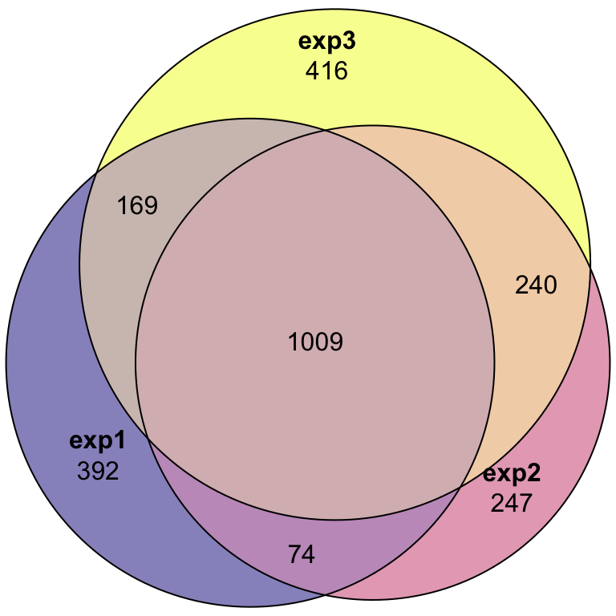
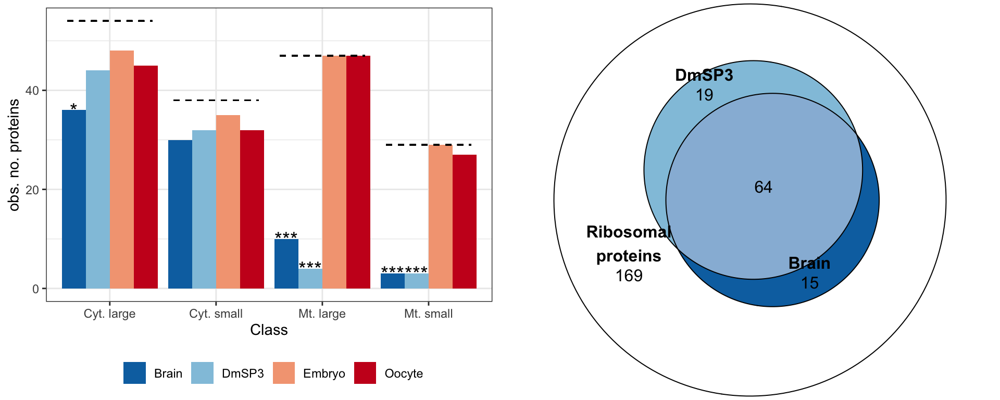
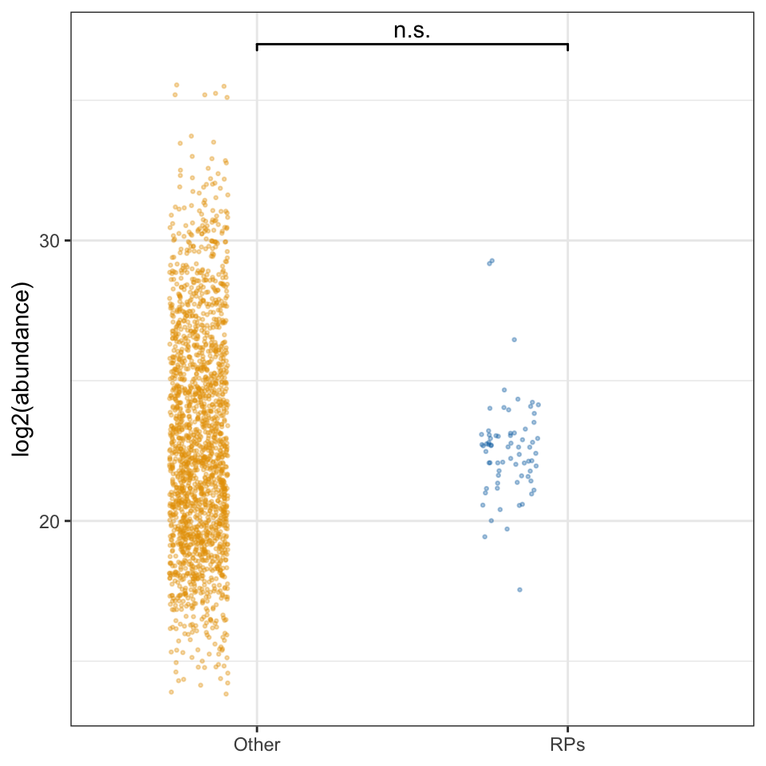
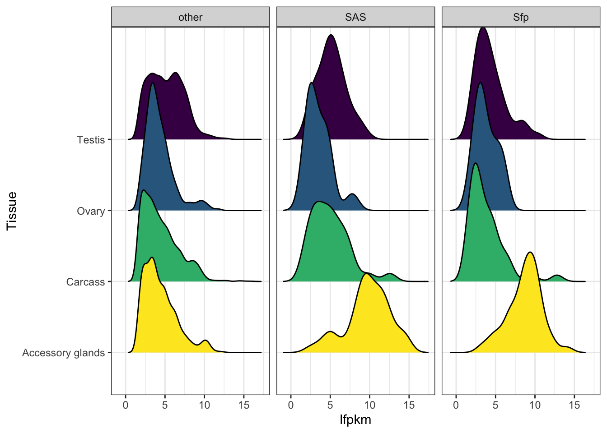
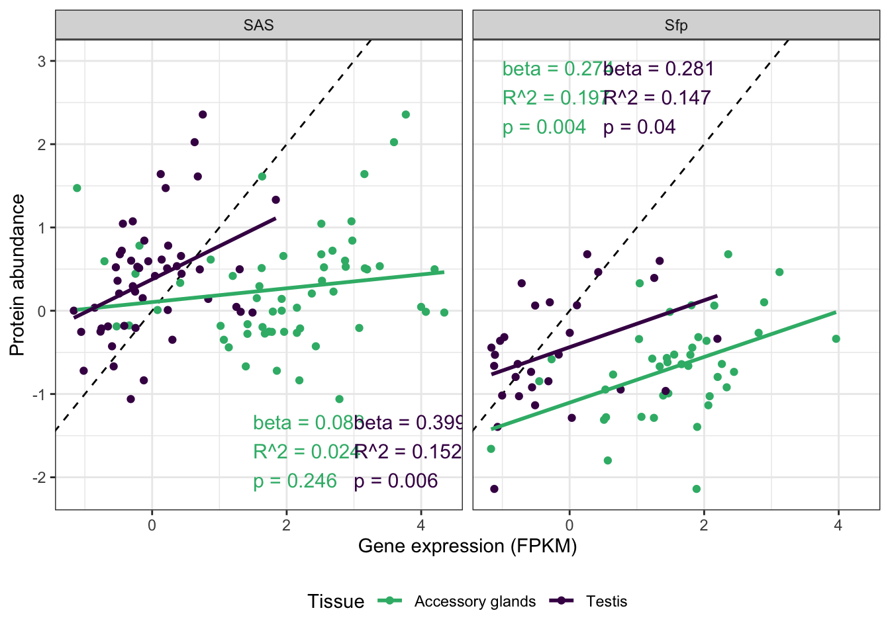
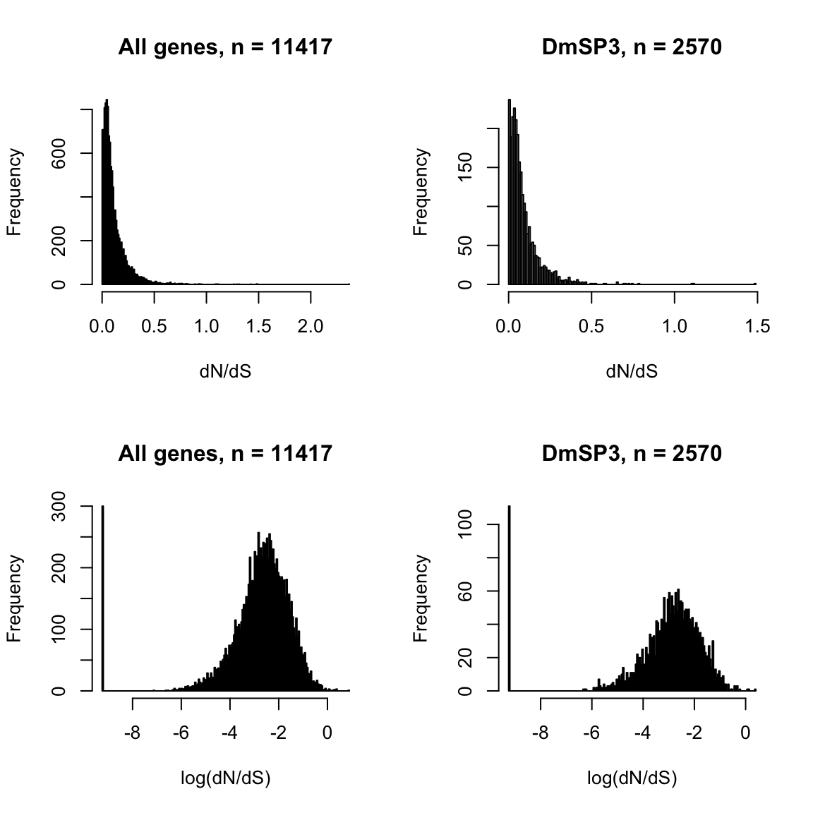
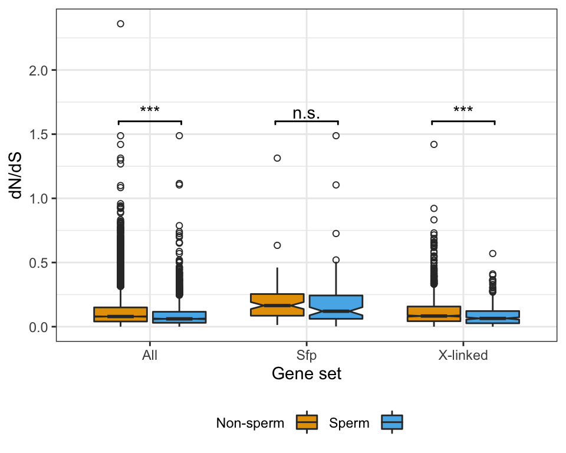
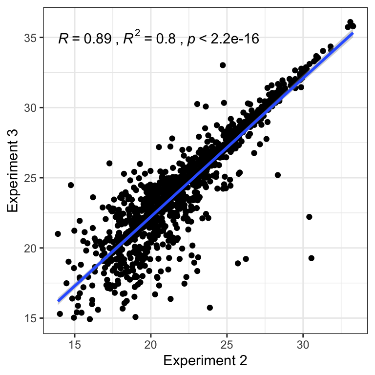

Statistical analysis
Martin Garlovsky
2021-04-01
Last updated: 2022-02-10
Checks: 7 0
Knit directory: DmSP3/
This reproducible R Markdown analysis was created with workflowr (version 1.6.2). The Checks tab describes the reproducibility checks that were applied when the results were created. The Past versions tab lists the development history.
Great! Since the R Markdown file has been committed to the Git repository, you know the exact version of the code that produced these results.
Great job! The global environment was empty. Objects defined in the global environment can affect the analysis in your R Markdown file in unknown ways. For reproduciblity it’s best to always run the code in an empty environment.
The command set.seed(20220210) was run prior to running the code in the R Markdown file. Setting a seed ensures that any results that rely on randomness, e.g. subsampling or permutations, are reproducible.
Great job! Recording the operating system, R version, and package versions is critical for reproducibility.
Nice! There were no cached chunks for this analysis, so you can be confident that you successfully produced the results during this run.
Great job! Using relative paths to the files within your workflowr project makes it easier to run your code on other machines.
Great! You are using Git for version control. Tracking code development and connecting the code version to the results is critical for reproducibility.
The results in this page were generated with repository version 8e0c730. See the Past versions tab to see a history of the changes made to the R Markdown and HTML files.
Note that you need to be careful to ensure that all relevant files for the analysis have been committed to Git prior to generating the results (you can use wflow_publish or wflow_git_commit). workflowr only checks the R Markdown file, but you know if there are other scripts or data files that it depends on. Below is the status of the Git repository when the results were generated:
Ignored files:
Ignored: .DS_Store
Ignored: .Rhistory
Ignored: .Rproj.user/
Ignored: data/.DS_Store
Ignored: output/.DS_Store
Untracked files:
Untracked: README.html
Untracked: code/parse_PAML.R
Untracked: data/040721_PBS_NaCl_1PeptideLFQ.csv
Untracked: data/DmSP3_Xlinked_Ribosomes.xlsx
Untracked: data/DmSPii_Supp.Table3.csv
Untracked: data/FlyAtlas2/
Untracked: data/FlyBase/
Untracked: data/Fly_Proteomes_LumosFusion/
Untracked: data/HaltNohaltPBST_uniprot.csv
Untracked: data/Halt_NoHalt_PBST.xlsx
Untracked: data/KB_10MSE_sperm_Edited.xlsx
Untracked: data/dm6_ver78_age.csv
Untracked: data/dmel_SFPs_wigby_etal2020.csv
Untracked: data/oneratio_SWAMP.txt
Untracked: figures/
Untracked: output/DmSP_ribosomes.csv
Untracked: output/DmSP_which_proteome.csv
Untracked: output/GO_lists/
Untracked: output/OMIM_results/
Untracked: output/PAML/
Untracked: output/Recent_DmSP3.csv
Untracked: output/Top20DmSP3.csv
Untracked: output/Ylinked_DmSP3.csv
Untracked: output/paralog_switches.csv
Note that any generated files, e.g. HTML, png, CSS, etc., are not included in this status report because it is ok for generated content to have uncommitted changes.
These are the previous versions of the repository in which changes were made to the R Markdown (analysis/statistical_analysis.Rmd) and HTML (docs/statistical_analysis.html) files. If you’ve configured a remote Git repository (see ?wflow_git_remote), click on the hyperlinks in the table below to view the files as they were in that past version.
| File | Version | Author | Date | Message |
|---|---|---|---|---|
| Rmd | 8e0c730 | MartinGarlovsky | 2022-02-10 | change readme, fix figures |
| html | 3ce1c47 | MartinGarlovsky | 2022-02-10 | Build site. |
| Rmd | d098234 | MartinGarlovsky | 2022-02-10 | update index and analysis |
| html | 5b13fbc | MartinGarlovsky | 2022-02-10 | Build site. |
| Rmd | 3573ca8 | MartinGarlovsky | 2022-02-10 | add analysis |
Load packages
library(tidyverse)
library(UpSetR)
library(eulerr)
library(readxl)
library(tidybayes)
library(kableExtra)
library(ggpubr)
library(edgeR)
library(pheatmap)
library(ComplexHeatmap)
library(boot)
library(DT)
library(pals)
library(knitrhooks) # install with devtools::install_github("nathaneastwood/knitrhooks")
output_max_height() # a knitrhook option
# set colourblind friendly palette
cbPalette <- c("#999999", "#E69F00", "#56B4E9", "#009E73", "#F0E442", "#0072B2", "#D55E00", "#CC79A7")
my_data_table <- function(df){
datatable(
df, rownames = FALSE,
autoHideNavigation = TRUE,
extensions = c("Scroller", "Buttons"),
options = list(
dom = 'Bfrtip',
deferRender = TRUE,
scrollX = TRUE, scrollY = 400,
scrollCollapse = TRUE,
buttons =
list('csv', list(
extend = 'pdf',
pageSize = 'A4',
orientation = 'landscape',
filename = 'Dpseudo_respiration')),
pageLength = 50
)
)
}Load data
Files downloaded from FlyBase.org:
- Genes to Transcript to Protein IDs
- Gene names and gene symbols, GO terms, chromosomal location (
LOCATION_ARM) - All 168 ribosomal proteins, including paralogs
List of all putative Sfps identified by Wigby et al. (2020). Phil. trans. B
Previous D. melanogaster sperm proteomes:
New data generated:
- Experiment 1: All identified proteins and abundance data
- Experiment 2: Abundance data for proteins from ‘NoHalt’, ‘Halt’ controls or ‘PBST’ treatment
- Experiment 3: Abundance data for proteins from ‘PBS’ control or ‘NaCl’ treatment
# gene conversion table from FlyBase.org
gene2tran2prot <- read.csv('data/FlyBase/fbgn_fbtr_fbpp_fb_2021_01.csv')
# gene IDs and GO terms (by importing gene conversion table FBgns to flybase)
flybase_results <- read.delim('data/FlyBase/flybase_all-genes.csv', sep = ',') %>%
dplyr::select(-H_SAPIENS_ORTHOLOGS, -NAME) %>%
dplyr::rename(FBgn = X.SUBMITTED.ID)
# Dmel ribosomes - all and those found in sperm
Dm_ribosomes <- read_delim('data/FlyBase/FlyBase_ribosomes_169.txt') %>%
dplyr::select(FBgn = `#SUBMITTED ID`, H_SAPIENS_ORTHOLOGS:SYMBOL, -SPECIES_ABBREVIATION)
# List of SFPs collated by Wigby et al. 2020 Phil. Trans. B.
wigbySFP <- read.csv('data/dmel_SFPs_wigby_etal2020.csv')
# only high confidence Sfps
SFPs <- wigbySFP %>%
filter(category == 'highconf')
# Dmel Sperm proteome 1/2 from Wasbrough et al. 2010 J. Prot.
DmSPI <- read.csv('data/DmSPii_Supp.Table3.csv') %>%
filter(Proteome.Overlap == 'DmSPI' | Proteome.Overlap == 'Current Study and DmSPI')
DmSPII <- read.csv('data/DmSPii_Supp.Table3.csv') %>%
filter(Proteome.Overlap == 'Current Study' | Proteome.Overlap == 'Current Study and DmSPI')
DmSP2 <- read.csv('data/DmSPii_Supp.Table3.csv')
### new data ###
DmSPIII <- read_excel('data/DmSP3_Xlinked_Ribosomes.xlsx', sheet = 1) %>%
dplyr::rename(CG.no = `CG#`)
# Protein abundance data
DmSPintensity <- read_excel('data/KB_10MSE_sperm_Edited.xlsx', sheet = 1) %>%
dplyr::rename(FBgn = `Ensembl Gene ID`)
# Halt/NoHalt/PBST treatment experiment
PBST_dat <- readxl::read_excel('data/Halt_NoHalt_PBST.xlsx') %>%
left_join(read_csv('data/HaltNohaltPBST_uniprot.csv')) %>%
left_join(read.delim('data/FlyBase/uniprot2FlyBase_chrm.txt'),
by = c('FBgn' = 'X.SUBMITTED.ID')) %>%
distinct(Accession, .keep_all = TRUE)
# NaCl wash data
salt_dat <- read.csv('data/040721_PBS_NaCl_1PeptideLFQ.csv',
na.strings = c("NA", "NaN", " ", '')) %>%
dplyr::rename(FBgn = Ensembl.Gene.ID)Overlap between new datasets
We performed three LC-MS experiments on purified sperm samples. For experiment 1, we combine the IDs from two algorithms (i) identifying proteins and (ii) from protein quantitation. We then combine all IDs across the three experiments to compile a complete list of all proteins IDd in the current study.
### Additional abundance data
# Data processed for identification was processed separately for quantification. Differences in algorithms results in a slight disparity in the number of protein identifications.
ab_fbgn <- data.frame(FBgn = unlist(str_split(DmSPintensity$FBgn, pattern = '; '))) %>% na.omit()
# upset(fromList(list(DmSPIII.id = DmSPIII$FBgn,
# DmSPIII.ab = ab_fbgn$FBgn)))
# proteins IDd in DmSP3 (identification + abundance data)
DmSP_exp1 <- data.frame(FBgn = unique(c(DmSPIII$FBgn, ab_fbgn$FBgn))) %>%
left_join(flybase_results %>% dplyr::select(FBgn, SYMBOL))
## compare ids in each dataset
# upset(fromList(list(exp1 = DmSP_exp1$FBgn,
# PBST = PBST_dat$FBgn,
# Salt = salt_dat$FBgn)))
# euler diagram
#pdf('figures/current_study_overlap.pdf', height = 4, width = 4)
plot(euler(c('exp1' = 392, "exp2" = 247, "exp3" = 416,
'exp1&exp2' = 74,
'exp1&exp3' = 169,
'exp2&exp3' = 240,
'exp1&exp2&exp3' = 1009)
),
quantities = TRUE,
fills = list(fill = viridis::plasma(n = 3), alpha = .5))
| Version | Author | Date |
|---|---|---|
| 5b13fbc | MartinGarlovsky | 2022-02-10 |
#dev.off()
# combine all new data
DmSPIII.2 <- data.frame(FBgn = unique(
c(DmSP_exp1$FBgn, PBST_dat$FBgn, salt_dat$FBgn))) %>%
separate_rows(FBgn) %>%
left_join(flybase_results %>% dplyr::select(FBgn, SYMBOL)) %>%
distinct(FBgn, .keep_all = TRUE)Overlap between DmSP-1, -2, and -3
Here we look at the overlap between proteins IDd in the current study (n = 2563) with the previous releases of the DmSP (n = 1108. The current study increases the number of identified proteins significantly.
DmSP1 vs. DmSP2 vs. DmSP3
# upset plot to get numbers in each group
listInput <- list(DmSP.1 = DmSPI$FBgn,
DmSP.2 = DmSPII$FBgn,
DmSP.3 = DmSPIII.2$FBgn)
#upset(fromList(listInput), order.by = 'degree')
# Eulerr diagram
DmSP_overlap <- plot(euler(c('DmSP1' = 68, "DmSP2" = 538, "Current Study" = 2069,
'DmSP1&DmSP2' = 8,
'DmSP1&Current Study' = 84,
'DmSP2&Current Study' = 229,
'DmSP1&DmSP2&Current Study' = 181)),
quantities = TRUE,
fills = list(fill = viridis::viridis(n = 3), alpha = .5))
#pdf('figures/DmSP1-2-3_overlap.pdf', height = 4, width = 4)
DmSP_overlap
| Version | Author | Date |
|---|---|---|
| 5b13fbc | MartinGarlovsky | 2022-02-10 |
#dev.off()
# extract genes in each category
x <- upset(fromList(listInput))
intersect_dat <- x$New_data %>% rownames_to_column()
x1 <- unlist(listInput, use.names = FALSE)
x1 <- x1[ !duplicated(x1) ]
# in all 3
all_3 <- intersect_dat %>% filter(DmSP.1 == 1, DmSP.2 == 1, DmSP.3 == 1)
# in 1 and 2
in1_2 <- intersect_dat %>% filter(DmSP.1 == 1, DmSP.2 == 1, DmSP.3 == 0)
# in 1 and 3
in1_3 <- intersect_dat %>% filter(DmSP.1 == 1, DmSP.2 == 0, DmSP.3 == 1)
# in 2 and 3
in2_3 <- intersect_dat %>% filter(DmSP.1 == 0, DmSP.2 == 1, DmSP.3 == 1)
# 1 only
only1 <- intersect_dat %>% filter(DmSP.1 == 1, DmSP.2 == 0, DmSP.3 == 0)
# 1 only
only2 <- intersect_dat %>% filter(DmSP.1 == 0, DmSP.2 == 1, DmSP.3 == 0)
# 1 only
only3 <- intersect_dat %>% filter(DmSP.1 == 0, DmSP.2 == 0, DmSP.3 == 1)Cumulative number ID’d
Here we combine the list of all proteins identified in the current study with the DmSP2 to compile the DmSP3. We calculated average abundances across experiments, excluding the PBST treatment values, which had a significant effect on the abundance of a large number of proteins (see below). We also create our ‘high-confidence’ DmSP3, excluding proteins identified by fewer than 2 unique peptides or identified in fewer than 2 biological replicates across all experiments.
# new column names for abundance data
exp_names <- c('REP1.1', 'REP1.2', 'REP1.3',
'Halt1', 'Halt2', 'Halt3',
'NoHalt1', 'NoHalt2', 'NoHalt3',
'NaCl1.1', 'NaCl1.2', 'NaCl2.1', 'NaCl2.2',
'NaCl3.1', 'NaCl3.2', 'NaCl4.1', 'NaCl4.2',
'PBS1.1', 'PBS1.2', 'PBS2.1', 'PBS2.2',
'PBS3.1', 'PBS3.2', 'PBS4.1', 'PBS4.2',
'NaCl1', 'NaCl2', 'NaCl3', 'NaCl4',
'PBS1', 'PBS2', 'PBS3', 'PBS4')
# Make the combined DmSP table
DmSP3 <- tibble(
# combine IDs for DmSP1, DmSP2, and current study
FBgn = c(DmSPI$FBgn, DmSPII$FBgn, DmSPIII.2$FBgn)) %>%
left_join(read.delim('data/FlyBase/uniprot2FlyBase_chrm.txt'),
by = c('FBgn' = 'X.SUBMITTED.ID')) %>%
separate_rows(FBgn) %>%
distinct(FBgn, .keep_all = TRUE) %>%
# variable indicating which study each protein is identified in
mutate(Sperm_Proteome = case_when(FBgn %in% x1[as.numeric(all_3$rowname)] ~ 'DmSP1_2_3',
FBgn %in% x1[as.numeric(in1_2$rowname)] ~ 'DmSP1_2',
FBgn %in% x1[as.numeric(in1_3$rowname)] ~ 'DmSP1_3',
FBgn %in% x1[as.numeric(in2_3$rowname)] ~ 'DmSP2_3',
FBgn %in% x1[as.numeric(only1$rowname)] ~ 'DmSP1',
FBgn %in% x1[as.numeric(only2$rowname)] ~ 'DmSP2',
FBgn %in% x1[as.numeric(only3$rowname)] ~ 'DmSP3')) %>%
# Add abundance data from experiment 1 and calculate mean abundance
left_join(DmSPintensity %>%
dplyr::select(FBgn, unique.one = `# Unique Peptides`, contains('ed):')) %>%
mutate(reps.one = rowSums(dplyr::select(., contains('ed):')) > 0),
mn.one = rowMeans(dplyr::select(., contains('ed):')), na.rm = TRUE))
) %>%
# Add abundance data from experiment 2 excluding PBST treatment and calculate mean abundance
left_join(PBST_dat %>% dplyr::select(FBgn, unique.two = `# Unique Peptides`, 45:50) %>%
mutate(reps.two = rowSums(dplyr::select(., contains('Ab')) > 0),
mn.two = rowMeans(dplyr::select(., contains('Ab')), na.rm = TRUE))
) %>%
# Add abundance data from experiment 3 and calculate mean abundance
left_join(salt_dat %>% dplyr::select(FBgn, unique.three = X..Unique.Peptides, 55:70) %>%
mutate(repl1 = rowSums(dplyr::select(., 3:4), na.rm = TRUE),
repl2 = rowSums(dplyr::select(., 5:6), na.rm = TRUE),
repl3 = rowSums(dplyr::select(., 7:8), na.rm = TRUE),
repl4 = rowSums(dplyr::select(., 9:10), na.rm = TRUE),
repl5 = rowSums(dplyr::select(., 11:12), na.rm = TRUE),
repl6 = rowSums(dplyr::select(., 13:14), na.rm = TRUE),
repl7 = rowSums(dplyr::select(., 15:16), na.rm = TRUE),
repl8 = rowSums(dplyr::select(., 17:18), na.rm = TRUE)) %>%
mutate(reps.three = rowSums(dplyr::select(., contains('repl')) > 0),
mn.three = rowMeans(dplyr::select(., contains('repl')), na.rm = TRUE))
) %>%
distinct(FBgn, .keep_all = TRUE) %>%
# Add variables indicating protein confidence
mutate(
# number of replicates each protein found in separately for each experiment and combined
comb.reps = case_when(reps.one >= 2 | reps.two >= 2 | reps.three >= 2 ~ 'confident',
rowSums(dplyr::select(., starts_with('reps')),
na.rm = TRUE) >= 2 ~ 'found',
TRUE ~ 'no.reps'),
# number of unique peptides each protein identified by separately for each experiment and combined
comb.peps = case_when(unique.one >= 2 | unique.two >= 2 | unique.three >= 2 ~ 'confident',
rowSums(dplyr::select(., starts_with('un')),
na.rm = TRUE) >= 2 ~ 'found',
TRUE ~ 'no.peps'),
# ranked abundance separately for each experiment
perc.one = percent_rank(mn.one) * 100,
perc.two = percent_rank(mn.two) * 100,
perc.three = percent_rank(mn.three) * 100) %>%
# rename abundance columns
rename_at(all_of(
colnames(dplyr::select(., starts_with('Abun'), starts_with('repl')))), ~ exp_names) %>%
mutate(
# calculate mean abundance across all experiments
grand.mean = rowMeans(dplyr::select(., REP1.1:REP1.3, Halt1:NoHalt3, NaCl1:PBS4), na.rm = TRUE),
# ranked abundance across all experiments
mean.perc = percent_rank(grand.mean) * 100,
# add variable for presence in list of putative Sfps
Sfp = case_when(FBgn %in% SFPs$FBgn ~ 'SFP.high',
FBgn %in% wigbySFP$FBgn ~ 'SFP.low',
TRUE ~ 'Sperm.only')) %>%
drop_na(FBgn)
# #write to file
# DmSP3 %>%
# mutate(DmSP2 = if_else(FBgn %in% DmSP2$FBgn, TRUE, FALSE)) %>%
# #filter(comb.reps == 'found' | comb.peps != 'no.peps') %>% dim
# #write_csv('output/DmSP_which_proteome.csv')
# write FBgn to file for GO analysis
#DmSP3 %>% dplyr::select(FBgn) %>% write_csv('output/GO_lists/DmSP3_3176.csv')
# number identified by two or more unique peptides in a single experiment
#DmSP3 %>% filter(comb.peps == 'confident') %>% dim
# number identified in two or more replicates across any experiment
#DmSP3 %>% filter(comb.reps != 'no.reps') %>% dim
# Confident proteins in current study
DmSPnew_conf <- DmSP3 %>%
filter(comb.peps != 'no.peps' | comb.reps != 'no.reps')
# combined DmSP1+2+DmSP3 (confident)
DmSP_comb <- DmSP3 %>%
filter(comb.peps != 'no.peps' | comb.reps != 'no.reps' | FBgn %in% DmSP2$FBgn)
# plot cumulative total IDs
cum_plot <- DmSP3 %>%
mutate(SP = str_sub(Sperm_Proteome, start = 5)) %>%
separate(SP, into = c('one', 'two', 'three'), sep = '_', extra = 'merge') %>%
pivot_longer(cols = c(one, two, three)) %>%
drop_na(value) %>% distinct(FBgn, .keep_all = TRUE) %>%
group_by(value) %>%
dplyr::count() %>% ungroup %>%
mutate(cum_sum = cumsum(n)) %>%
ggplot(aes(x = value, y = cum_sum)) +
geom_col() +
geom_bar(stat = 'identity', aes(y = n, fill = value)) +
scale_fill_viridis_d() +
scale_x_discrete(labels = c('1' = 'DmSP1',
'2' = 'DmSP2',
'3' = 'DmSP3')) +
labs(y = 'No. identified proteins') +
theme_bw() +
theme(legend.position = 'none',
axis.title.x = element_blank()) +
#ggsave(filename = 'figures/cumulative_IDs.pdf', width = 3, height = 3) +
NULL
cum_plot
| Version | Author | Date |
|---|---|---|
| 5b13fbc | MartinGarlovsky | 2022-02-10 |
Coefficient of variation
For each experiment we calculate the coefficient of variation across replicates (log10 protein abundance).
cv <- function(x) sd(x, na.rm = TRUE)/mean(x, na.rm = TRUE)
# get all experiments
allexp <- apply(log10(DmSP3 %>% dplyr::select(REP1.1:REP1.3, Halt1:NoHalt3, NaCl1:PBS4)), FUN = cv, 1)
CV_dat <- DmSP3 %>%
dplyr::select(FBgn,
REP1.1:REP1.3,
Halt1:NoHalt3,
NaCl1:PBS4) %>%
pivot_longer(cols = 2:18) %>%
mutate(log_val = log10(value),
experiment = case_when(grepl('REP', name) ~ 'Experiment 1',
grepl('Halt', name) ~ 'Experiment 2',
TRUE ~ 'Experiment 3'),
treatment = case_when(grepl('REP', name) ~ 'exp1',
grepl('^Halt', name) ~ 'exp2.1',
grepl('No', name) ~ 'exp2.2',
grepl('NaCl', name) ~ 'exp3.1',
TRUE ~ 'exp3.2'))
# calculate medians
CV_dat %>%
group_by(FBgn, experiment) %>%
summarise(CV = cv(log_val)) %>%
bind_rows(data.frame(FBgn = DmSP3$FBgn,
experiment = 'All',
CV = allexp)) %>%
group_by(experiment) %>%
summarise(N = n(),
md = median(CV, na.rm = TRUE),
sd = sd(CV, na.rm = TRUE))# A tibble: 4 × 4 experiment N md sd1 All 3176 0.0641 0.0335 2 Experiment 1 3176 0.0183 0.0274 3 Experiment 2 3176 0.0541 0.0350 4 Experiment 3 3176 0.0326 0.0286
CV_plot <- CV_dat %>%
group_by(FBgn, experiment) %>%
summarise(CV = cv(log_val)) %>%
ggplot(aes(x = experiment, y = CV, fill = experiment)) +
geom_boxplot(notch = TRUE) +
scale_fill_viridis_d(option = 'plasma') +
theme_bw() +
theme(legend.position = '',
axis.title.x = element_blank()) +
NULL
CV_plot
| Version | Author | Date |
|---|---|---|
| 5b13fbc | MartinGarlovsky | 2022-02-10 |
Top 20 most abundant proteins
DmSP3 %>%
arrange(desc(grand.mean)) %>%
head(20) %>% #write_csv('output/Top20DmSP3.csv')
mutate(NAME = if_else(NAME == '-', ANNOTATION_SYMBOL, NAME)) %>%
dplyr::select(FBgn, Name = NAME, `Ranked abundance (%)` = mean.perc) %>%
mutate(across(3, ~round(.x, 1))) %>%
my_data_table()Chromosomal distribution
We retrieved chromosomal location of all genes in the genome from FlyBase.org (n = 13957) and summarised the total number of genes on each chromosome. We then counted the observed number of sperm genes (n = 3176) on each chromosome, and calculated the expected number based on the total number of sperm proteins identified. Finally, we calculated \(\chi^2\) statistics for each chromosome and the associated p-values. We excluded the Y chromosome due to the small numbers of proteins. We used the Bejamini-Hochberg false discovery rate procedure to correct for multiple testing.
# Total number of genes on each chromosome - to work out 'expected'
TotalGeneNumber <-
# here I parsed the ~22k proteins from the Dmel uniprot proteome and submitted to FlyBase.org
# I then remove any duplicate genes (i.e. some proteins have multiple isoforms)
read.delim('data/FlyBase/uniprot2FlyBase_chrm.txt') %>%
dplyr::select(FBgn = X.SUBMITTED.ID, LOCATION_ARM) %>%
distinct(FBgn, .keep_all = TRUE) %>%
filter(LOCATION_ARM %in% c('2L', '2R', '3L', '3R', '4', 'X', 'Y')) %>%
group_by(LOCATION_ARM) %>%
summarise(N = n()) %>%
mutate(pr.total.genes = N/sum(N))
# Number of sperm genes on each chromosome - 'observed'
gene.no <- DmSP3 %>%
# replace DmSP3 with DmSP2 to compare results with previous studies
# DmSP2 %>%
# left_join(read.delim('data/FlyBase/uniprot2FlyBase_chrm.txt'),
# by = c('FBgn' = 'X.SUBMITTED.ID')) %>%
distinct(FBgn, .keep_all = TRUE) %>%
filter(LOCATION_ARM %in% c('2L', '2R', '3L', '3R', '4', 'X', 'Y')) %>%
group_by(LOCATION_ARM) %>%
summarise(obs.genes = n())
# Calculate observed and expected no. genes in each comparison on each chromosome to do X^2 test
chm_dist <- gene.no %>%
inner_join(TotalGeneNumber %>%
dplyr::rename(all.genes = N)) %>%
# remove Chm 4 and Y due to low numbers of genes present
filter(LOCATION_ARM != 'Y') %>%
# Calculate X^2 statistics
mutate(exp.genes = round(n_distinct(DmSP3$FBgn) * pr.total.genes, 1), # expected no. genes
obs.exp = obs.genes/exp.genes, # observed / expected no. genes
X2 = (obs.genes - exp.genes)^2/exp.genes, # calculate X^2 stat
pval = 1 - (pchisq(X2, df = 1))) # get pvalue
# FDR corrected pval
chm_dist$FDR <- p.adjust(chm_dist$pval, method = 'fdr')
# plot chromosomal distribution
chm_plot <- chm_dist %>%
mutate(sigLabel = case_when(FDR < 0.001 ~ "***",
FDR < 0.01 & FDR > 0.001 ~ "**",
FDR < 0.05 & FDR > 0.01 ~ "*",
TRUE ~ ''),
Chromosome = fct_relevel(LOCATION_ARM, 'X', '2L', '2R', '3L', '3R', '4')) %>%
mutate(chm_n = paste0(Chromosome, '\n(', all.genes, ')')) %>%
ggplot(aes(x = Chromosome, y = obs.exp, fill = Chromosome)) +
geom_histogram(stat = 'identity') +
geom_hline(yintercept = 1, linetype = "dashed", colour = "black") +
#scale_fill_viridis_d(direction = -1) +
scale_fill_brewer(palette = 'Spectral') +
labs(x = "Chromosome", y = "observed/expected\n no. genes") +
theme_bw() +
theme(legend.position = 'none',
legend.text = element_text(size = 10),
strip.text.y = element_text(face = "italic")) +
geom_text(aes(label = sigLabel),
size = 10, colour = "black") +
geom_text(aes(y = -0.05, label = paste0(obs.genes, '/', exp.genes)),
size = 5, colour = "black") +
#ggsave(filename = 'figures/chm_dist.pdf', width = 4, height = 3) +
NULLPlot
The X and 3R chromosomes have significantly fewer sperm genes than expected with a FDR cut-off < 0.05.
chm_plot
| Version | Author | Date |
|---|---|---|
| 5b13fbc | MartinGarlovsky | 2022-02-10 |
Y-linked genes
We identified 9 Y chromosome genes. All above the DmSP3 average abundance:
DmSP3 %>%
filter(LOCATION_ARM == 'Y') %>%
distinct(FBgn, .keep_all = TRUE) %>%
dplyr::select(FBgn, Name = NAME, `Ranked abundance (%)` = mean.perc) %>%
arrange(desc(`Ranked abundance (%)`)) %>% #write_csv('output/Ylinked_DmSP3.csv')
kable(digits = 1) %>%
kable_styling(full_width = FALSE)| FBgn | Name | Ranked abundance (%) |
|---|---|---|
| FBgn0267433 | male fertility factor kl5 | 98.8 |
| FBgn0267432 | male fertility factor kl3 | 98.8 |
| FBgn0058064 | Aldehyde reductase Y | 95.5 |
| FBgn0001313 | male fertility factor kl2 | 93.6 |
| FBgn0046323 | Occludin-Related Y | 92.9 |
| FBgn0267449 | WD40 Y | 86.4 |
| FBgn0267592 | Coiled-Coils Y | 86.0 |
| FBgn0046697 | Ppr-Y | 78.3 |
| FBgn0046698 | Protein phosphatase 1, Y-linked 2 | 65.2 |
Gene age
As with chromosomal distribution, we calculated the observed and expected number of genes in each age class (retrieved from http://gentree.ioz.ac.cn/index.php and recoded as in Patlar et al. (2021). Evolution), calculated \(\chi^2\) statistics and the associated p-values, and used the Bejamini-Hochberg false discovery rate procedure to correct for multiple testing.
gene_age <- read.csv('data/dm6_ver78_age.csv') %>%
left_join(read.delim('data/FlyBase/uniprot2FlyBase_chrm.txt'),
by = c('FBgn' = 'X.SUBMITTED.ID')) %>%
distinct(FBtr, .keep_all = TRUE) %>%
mutate(sp_prot = if_else(FBgn %in% DmSP3$FBgn, 'Sperm', 'Other'),
# recode age class
gene_class = case_when(branch == 0 ~ 'ancient',
branch <= 2 ~ 'sophophora',
branch <= 3 ~ 'mel_group',
branch <= 4 ~ 'mel_sub',
TRUE ~ 'recent'),
gene_class = fct_relevel(gene_class,
'ancient', 'sophophora', 'mel_group', 'mel_sub',
'recent'))
#xtabs(~ gene_class + sp_prot, data = gene_age)
# Total number of genes in each age class - to work out 'expected'
TotalGeneNumber.ageclass <- gene_age %>%
#filter(sp_prot == 'Sperm') %>%
group_by(gene_class) %>%
dplyr::count(name = 'N') %>%
mutate(pr.total.genes = N/nrow(gene_age))
# Number of sperm genes in each age class - 'observed'
gene.no.ageclass <- gene_age %>%
filter(sp_prot == 'Sperm') %>%
group_by(gene_class) %>%
dplyr::count(name = 'obs.genes')
# Calculate observed and expected no. genes in each comparison on each chromosome to do X^2 test
age_dist <- gene.no.ageclass %>%
inner_join(TotalGeneNumber.ageclass %>%
dplyr::rename(all.genes = N)) %>%
# Calculate X^2 statistics
mutate(exp.genes = round(nrow(gene_age %>% filter(sp_prot == 'Sperm')) *
pr.total.genes, 1), # expected no. genes
obs.exp = obs.genes/exp.genes, # observed / expected no. genes
X2 = (obs.genes - exp.genes)^2/exp.genes, # calculate X^2 stat
pval = 1 - (pchisq(X2, df = 1))) # get pvalue
# FDR corrected pval
age_dist$FDR <- p.adjust(age_dist$pval, method = 'fdr')
# plot chromosomal distribution
age_plot <- age_dist %>%
mutate(sigLabel = case_when(FDR < 0.001 ~ "***",
FDR < 0.01 & FDR > 0.001 ~ "**",
FDR < 0.05 & FDR > 0.01 ~ "*",
TRUE ~ '')) %>%
mutate(age_n = paste0(gene_class, '\n(', all.genes, ')')) %>%
ggplot(aes(x = gene_class, y = obs.exp, fill = gene_class)) +
geom_histogram(stat = 'identity') +
geom_hline(yintercept = 1, linetype = "dashed", colour = "black") +
scale_fill_viridis_d() +
scale_x_discrete(labels = c('ancient' = 'Ancient', 'sophophora' = 'Sophophora',
'mel_group' = expression(paste(italic('D. mel'), ' gr.')),
'mel_sub' = expression(paste(italic('D. mel'), ' subgr.')),
'recent' = 'Recent')) +
labs(x = "Age", y = "observed/expected\n no. genes") +
theme_bw() +
theme(legend.position = 'none',
legend.text = element_text(size = 10),
strip.text.y = element_text(face = "italic")) +
geom_text(aes(label = sigLabel),
size = 10, colour = "black") +
geom_text(aes(y = -0.05, label = paste0(obs.genes, '/', exp.genes)),
size = 5, colour = "black") +
#ggsave(filename = 'figures/age_dist.pdf', width = 4, height = 3) +
NULLNew/recent genes in the DmSP3
gene_age %>%
filter(gene_class == 'recent' & sp_prot == 'Sperm') %>% #write_csv('output/Recent_DmSP3.csv')
dplyr::select(FBgn, Name = NAME, Symbol = SYMBOL, Chromosome = LOCATION_ARM) %>%
mutate(Name = if_else(Name == '-', Symbol, Name)) %>%
arrange(Symbol) %>%
kable() %>%
kable_styling(full_width = FALSE)| FBgn | Name | Symbol | Chromosome |
|---|---|---|---|
| FBgn0035571 | CG12493 | CG12493 | 3L |
| FBgn0031935 | CG13793 | CG13793 | 2L |
| FBgn0040028 | CG17450 | CG17450 | X |
| FBgn0032868 | CG17472 | CG17472 | 2L |
| FBgn0030629 | CG9123 | CG9123 | X |
| FBgn0264077 | Calnexin 14D | Cnx14D | X |
| FBgn0260484 | Hsc/Hsp70-interacting protein | HIP | X |
| FBgn0052580 | Mucin 14A | Muc14A | X |
| FBgn0053105 | p24-related-2 | p24-2 | 3R |
| FBgn0050382 | Proteasome alpha1 subunit-related | Prosalpha1R | 2R |
| FBgn0013301 | Protamine B | ProtB | 2L |
| FBgn0028986 | Serpin 38F | Spn38F | 2L |
| FBgn0260463 | Uncoordinated 115b | Unc-115b | 3R |
OMIM
We used the precomputed list of human disease orthologs from FlyBase.org to retrieve OMIM hits for proteins in the DmSP3.
OMIM <- read.csv('data/FlyBase/DmSP3_OMIM.csv', na.strings = c('')) %>%
dplyr::rename(FBgn = X..Dmel_gene_ID)
Hsap_hom <- read.delim('data/FlyBase/FlyBase_Hsap_homologs.txt', na.strings = c('NA', '', '-')) %>%
dplyr::rename(FBgn = X.SUBMITTED.ID)
# # number of human homologs
# Hsap_hom %>%
# drop_na(H_SAPIENS_ORTHOLOGS) %>%
# distinct(FBgn) %>%
# count()
# # number of fly genes with more than one human homolog (disease vs not)
# OMIM %>%
# mutate(OMIM = if_else(is.na(OMIM_Phenotype_IDs), 'No', 'Yes')) %>%
# group_by(FBgn, OMIM) %>%
# summarise(N = n_distinct(Human_gene_symbol)) %>%
# group_by(OMIM, N) %>% count %>%
# mutate(N_genes = if_else(N > 1, '> 1', '1')) %>%
# ggplot(aes(x = OMIM, y = n, fill = N_genes)) +
# geom_col(position = 'fill') +
# scale_fill_manual(values = cbPalette[2:1]) +
# scale_y_continuous(labels = scales::percent) +
# theme_bw() +
# #theme(legend.title = element_blank()) +
# NULL
# # total number of homologs per Dmel gene
# Hsap_hom %>%
# separate_rows(H_SAPIENS_ORTHOLOGS, sep = ' <newline> ') %>%
# mutate(homolog = if_else(is.na(H_SAPIENS_ORTHOLOGS) == TRUE, 'no', 'yes')) %>%
# group_by(FBgn, homolog) %>% count() %>%
# mutate(N_genes = case_when(n > 1 & homolog == 'yes' ~ '> 1',
# n == 1 & homolog == 'yes' ~ '1',
# TRUE ~ 'No')) %>%
# group_by(N_genes) %>% count()
# # number of genes with disease phenotype
# Hsap_hom %>%
# mutate(omim = case_when(FBgn %in% OMIM$FBgn[is.na(OMIM$OMIM_Phenotype_IDs) == FALSE] ~ 'omim',
# TRUE ~ 'no')) %>%
# group_by(omim) %>% count()
# # number of human diseases per Dmel gene
# OMIM %>%
# drop_na(OMIM_Phenotype_IDs) %>%
# left_join(Hsap_hom, by = 'FBgn') %>%
# group_by(FBgn) %>%
# count() %>%
# mutate(N_genes = if_else(n > 1, '> 1', '1')) %>%
# group_by(N_genes) %>% count()
omim_1 <- data.frame(homolog = c('No', '1', '> 1'),
n = c(1974, 785, 417),
row = 'A') %>%
ggplot(aes(x = n, y = row, fill = homolog)) +
geom_col(position = 'fill') +
scale_fill_manual(values = cbPalette[3:1],
name = "Disease\nhomolog") +
scale_x_continuous(labels = scales::percent) +
theme_bw() +
theme(#legend.title = element_blank(),
legend.position = 'bottom',
axis.title.x = element_blank(),
axis.title.y = element_blank(),
axis.text.y = element_blank(),
axis.ticks.y = element_blank()) +
annotate("text", x = c(0.3, 0.75, 0.93), y = 1, label = c(1974, 785, 417),
size = 5) +
#ggsave(filename = 'figures/OMIM_no.pdf', width = 2, height = 4) +
NULL
omim_no <- OMIM %>%
mutate(OMIM = if_else(is.na(OMIM_Phenotype_IDs), 'zNo', 'Yes')) %>%
group_by(FBgn, OMIM) %>%
summarise(N = n_distinct(Human_gene_symbol)) %>%
arrange(OMIM) %>%
group_by(FBgn) %>%
slice(1) %>%
ungroup() %>%
mutate(N_genes = case_when(N > 1 & OMIM == 'Yes' ~ '> 1',
N == 1 & OMIM == 'Yes' ~ '1',
TRUE ~ 'No')) %>%
group_by(OMIM, N_genes) %>%
dplyr::count() %>%
mutate(row = 'A')
omim_1 <- omim_no %>%
ggplot(aes(x = n, y = row, fill = N_genes)) +
geom_col(position = 'fill') +
scale_fill_manual(values = cbPalette[3:1],
name = "Disease\nhomolog") +
scale_x_continuous(labels = scales::percent) +
theme_bw() +
theme(#legend.title = element_blank(),
legend.position = 'bottom',
axis.title.x = element_blank(),
axis.title.y = element_blank(),
axis.text.y = element_blank(),
axis.ticks.y = element_blank()) +
annotate("text", x = c(0.25, 0.66, 0.91), y = 1, label = rev(omim_no$n),
size = 5) +
#ggsave(filename = 'figures/OMIM_no.pdf', width = 2, height = 4) +
NULL
## all FBgns with associated disease phenotype
# OMIM %>%
# drop_na(OMIM_Phenotype_IDs) %>%
# distinct(FBgn, .keep_all = TRUE) #%>% write_csv('output/OMIM_results/all_FBgns.csv')
# # % genes with no disease ortholog
# OMIM %>%
# drop_na(OMIM_Phenotype_IDs) %>%
# distinct(FBgn) %>% dplyr::count() / n_distinct(OMIM$FBgn)
omim_plot <- plot(euler(c('DmSP3' = length(DmSP3$FBgn),
'DmSP3&Human\nhomologs' = 2598,
'DmSP3&Human\nhomologs&Disease\nhomologs' = 1202)),
quantities = TRUE,
fills = list(fill = viridis::viridis(n = 3), alpha = .8))Number of OMIM orthologs
#pdf('figures/OMIM_orths.pdf', height = 4, width = 4)
omim_plot
| Version | Author | Date |
|---|---|---|
| 5b13fbc | MartinGarlovsky | 2022-02-10 |
#dev.off()Human homologs
#pdf('figures/OMIM_plot.pdf', height = 6, width = 4)
gridExtra::grid.arrange(omim_plot, omim_1,
layout_matrix = rbind(c(1, 1),
c(1, 1),
c(2, 2)))
| Version | Author | Date |
|---|---|---|
| 5b13fbc | MartinGarlovsky | 2022-02-10 |
#dev.off()# chrom location of disease orthologs
omim.no <- OMIM %>%
drop_na(OMIM_Phenotype_IDs) %>%
left_join(read.delim('data/FlyBase/uniprot2FlyBase_chrm.txt'),
by = c('FBgn' = 'X.SUBMITTED.ID')) %>%
distinct(FBgn, .keep_all = TRUE) %>%
filter(LOCATION_ARM %in% c('2L', '2R', '3L', '3R', '4', 'X', 'Y')) %>%
group_by(LOCATION_ARM) %>%
summarise(obs.genes = n())
# Calculate observed and expected no. genes to do X^2 test
omim_dist <- omim.no %>%
inner_join(TotalGeneNumber %>%
dplyr::rename(all.genes = N)) %>%
# remove Chm 4 and Y due to low numbers of genes present
filter(LOCATION_ARM != 'Y') %>%
# Calculate X^2 statistics
mutate(exp.genes = round(1202 * pr.total.genes, 1), # expected no. genes
obs.exp = obs.genes/exp.genes, # observed / expected no. genes
X2 = (obs.genes - exp.genes)^2/exp.genes, # calculate X^2 stat
pval = 1 - (pchisq(X2, df = 1))) # get pvalue
# FDR corrected pval
omim_dist$FDR <- p.adjust(omim_dist$pval, method = 'fdr')Chromosomal distribution table
# table of results
omim_dist %>%
dplyr::select(Chromosome = LOCATION_ARM, Observed = obs.genes, Expected = exp.genes,
Chi2 = X2, FDR) %>%
kable(digits = 2) %>%
kable_styling(full_width = FALSE)| Chromosome | Observed | Expected | Chi2 | FDR |
|---|---|---|---|---|
| 2L | 222 | 229.1 | 0.22 | 0.77 |
| 2R | 248 | 244.9 | 0.04 | 0.84 |
| 3L | 227 | 235.7 | 0.32 | 0.77 |
| 3R | 305 | 295.3 | 0.32 | 0.77 |
| 4 | 12 | 6.9 | 3.77 | 0.31 |
| X | 181 | 188.1 | 0.27 | 0.77 |
# Parse Phenotype ID numbers and rank order
top_IDs <- data.frame(ID = gsub('\\[.*', '',
x = unlist(str_split(OMIM$OMIM_Phenotype_IDs.name.,
pattern = '],'))),
DESCRIPTION = gsub('.*\\[', '',
x = unlist(str_split(OMIM$OMIM_Phenotype_IDs.name.,
pattern = '],')))) %>%
mutate(DESCRIPTION = gsub(']', '', x = DESCRIPTION))
n_ids <- top_IDs %>%
group_by(ID) %>% dplyr::count() %>%
arrange(desc(n)) %>%
filter(ID != '')
# n_ids %>% group_by(n) %>% dplyr::count() %>%
# arrange(-n) %>%
# mutate(n_genes = n * nn)
# top_IDs[grep(paste(unlist(n_ids[1:34, 'ID']), collapse="|"), x = top_IDs$ID), ] %>%
# group_by(DESCRIPTION) %>%
# dplyr::count() %>%
# arrange(desc(n)) %>% print(n = 34) #%>% write_csv('output/OMIM_results/OMIM_tophits.csv')
# # grep top 17 IDs
# OMIM[grep(paste(c(top_IDs$ID[1:34]), collapse="|"),
# x = OMIM$OMIM_Phenotype_IDs.name.), ] %>%
# dplyr::select(-c(3:7)) %>%
# distinct(OMIM_Phenotype_IDs.name., .keep_all = TRUE)
## write tophits to files - 1 per phenotype
# for(i in 1:34) {
#
# db = OMIM[grep(n_ids$ID[i], x = OMIM$OMIM_Phenotype_IDs.name.), ]
#
# write_csv(db,
# paste0('output/OMIM_results/',
# gsub(' ', '_',
# str_replace_all(top_IDs$DESCRIPTION[i], "[[:punct:]]", " ")),
# '.csv'))
#
# }
### Ribosomal hits
# OMIM %>%
# drop_na(OMIM_Phenotype_IDs) %>%
# filter(FBgn %in% Dm_ribosomes$FBgn)Ribosomal proteins
We downloaded the 169 D. melanogaster ribosomal proteins curated by FlyBase.org to compare the number, abundance, and distribution of ribosomal proteins found in the DmSP3. We also searched for other recent proteomics studies from other tissues or cell types in D. melanogaster and downloaded the supplementary materials containing the full lists of proteins to extract the ribosomal proteins identified in each study to compare to the DmSP3.
# rename the ribosomal data set and add data on presence in the sperm proteome and chromosomal location
all_rib <- Dm_ribosomes %>%
# label genes based on presence in sperm proteome
mutate(sp_prot = case_when(
FBgn %in% c(DmSP3 %>% filter(comb.peps == 'confident') %>% pull(FBgn)) ~ 'Sperm.conf',
FBgn %in% c(DmSP3 %>% pull(FBgn)) ~ 'Sperm',
TRUE ~ 'Other'),
# define ribosomal class (small/large; cytoplasmic/mitochondrial)
CLASS = case_when(grepl('^RpL', x = SYMBOL) ~ 'CYT_LARGE',
grepl('^RpS', x = SYMBOL) ~ 'CYT_SMALL',
grepl('^mRpL', x = SYMBOL) ~ 'MIT_LARGE',
SYMBOL == 'sta' ~ 'CYT_SMALL',
TRUE ~ 'MIT_SMALL'),
loc = str_sub(CLASS, start = 1, 1),
size = str_sub(CLASS, start = 5, 5),
paralog = str_remove(SYMBOL, "[^0-9]+$"))
# # write supp table
# DmSP3 %>% filter(FBgn %in% all_rib$FBgn) %>% write_csv('output/DmSP_ribosomes.csv')
# # number of ribosomal proteins found in sperm by type
# all_rib %>%
# filter(sp_prot != 'Other') %>%
# group_by(loc) %>% count
#### Compare DmSP's
# upset(fromList(list(DmSP1 = intersect(DmSPI$FBgn, all_rib$FBgn),
# DmSP2 = intersect(DmSP2$FBgn, all_rib$FBgn),
# Current.study = intersect(DmSPIII.2$FBgn, all_rib$FBgn))))
# # Compare experiments
# upset(fromList(list(DmSP3 = all_rib %>% filter(sp_prot != 'Other') %>% pull(FBgn),
# PBSTd = all_rib %>% filter(FBgn %in% PBST_dat$FBgn) %>% pull(FBgn),
# SALTd = all_rib %>% filter(FBgn %in% salt_dat$FBgn) %>% pull(FBgn))))
## Load external data
# Li et al. 2020 (Cell) - brain
li_brain <- read_xlsx('data/Fly_Proteomes_LumosFusion/mmc2_Li_etal_2020.xlsx') %>%
dplyr::select(Accession = `UniProt Accession`, Species, UP = `Unique Peptides`) %>%
left_join(read.csv('data/Fly_Proteomes_LumosFusion/Li_etal_2020_uniprot2FBgn.csv')) %>%
filter(Species == 'DROME')
# Cao et al. 2020 (Cell Reports) - embryo
cao_embryo <- read.csv('data/Fly_Proteomes_LumosFusion/mmc2_Cao_etal_2020.csv') %>%
dplyr::rename(FBgn = 'FlyBase.ID')
# McDonough-Goldstein et al. 2020 (Scientific Reports) - oocyte
mcdonough_oocyte <- read_excel('data/Fly_Proteomes_LumosFusion/McDonough_etal_2021.xlsx') %>%
dplyr::select(FBgn = Description, UP = `Number of Unique Peptides`, starts_with('Abundance'))
colnames(mcdonough_oocyte)[3:8] <- paste0(rep(c('V', 'M'), each = 3), 1:3)
# Hopes et al. 2021 (Nucleic Acids Research)
hopes <- read.csv('data/Fly_Proteomes_LumosFusion/Hopes_etal_2021.csv') %>%
dplyr::rename(Accession = 'Inf_Accession.Information_BestAccession') %>%
left_join(read.csv('data/Fly_Proteomes_LumosFusion/Hopes_etal_2021_Accession2FBgn.csv'),
by = 'Accession')
# # overlap between datasets
# upset(fromList(list(
# DmSP3 = all_rib %>% filter(sp_prot != 'Other') %>% pull(FBgn),
# Oocyte = all_rib %>% filter(FBgn %in% mcdonough_oocyte$FBgn) %>% pull(FBgn),
# Brain = all_rib %>% filter(FBgn %in% li_brain$FBgn) %>% pull(FBgn),
# Embryo = all_rib %>% filter(FBgn %in% cao_embryo$FBgn) %>% pull(FBgn),
# Hopes = all_rib %>% filter(FBgn %in% hopes$FBgn) %>% pull(FBgn))))
plot(venn(c(#'DmSP3' = 168, 'Oocyte' = 168, 'Brain' = 168, 'Embryo' = 168,
'Hopes' = 2,
'Hopes&Embryo' = 4, 'Embryo&Oocyte' = 3, 'Hopes&Brain' = 1, 'DmSP3&Hopes' = 1,
'Oocyte&Hopes' = 1,
'Embryo&Hopes&Oocyte' = 58, 'Embryo&Oocyte&DmSP3' = 2, 'Embryo&Hopes&DmSP3' = 2,
'Oocyte&DmSP3&Brain' = 1, 'Embryo&Oocyte&Brain' = 1,
'Embryo&Hopes&Oocyte&DmSP3' = 14, 'Embryo&Hopes&Oocyte&Brain' = 13,
'Embryo&Hopes&DmSP3&Brain' = 5, 'Embryo&Oocyte&DmSP3&Brain' = 2,
'Hopes&Oocyte&DmSP3&Brain' = 1,
'Embryo&Hopes&Oocyte&DmSP3&Brain' = 55)),
quantities = TRUE)
| Version | Author | Date |
|---|---|---|
| 5b13fbc | MartinGarlovsky | 2022-02-10 |
# combine data
ribo_comb <- list(
DmSP3 = all_rib %>% filter(sp_prot != 'Other') %>% pull(FBgn),
Oocyte = all_rib %>% filter(FBgn %in% mcdonough_oocyte$FBgn) %>% pull(FBgn),
Brain = all_rib %>% filter(FBgn %in% li_brain$FBgn) %>% pull(FBgn),
Embryo = all_rib %>% filter(FBgn %in% cao_embryo$FBgn) %>% pull(FBgn)) %>%
reshape2::melt() %>%
dplyr::select(FBgn = value, Proteome = L1) %>%
left_join(all_rib %>% dplyr::select(FBgn, CLASS))
# perform Chi2 test
rib.test <- ribo_comb %>%
group_by(Proteome, CLASS) %>%
count() %>%
left_join(all_rib %>%
group_by(CLASS) %>% count(name = 'All')) %>%
mutate(obs.exp = n/All, # observed / expected no. genes
X2 = (n - All)^2/All, # calculate X^2 stat
pval = 1 - (pchisq(X2, df = 1))) # get pvalue
# FDR corrected pval
rib.test$FDR <- p.adjust(rib.test$pval, method = 'fdr')
rib_plot <- rib.test %>%
mutate(sigLabel = case_when(FDR < 0.001 ~ "***",
FDR < 0.01 & FDR > 0.001 ~ "**",
FDR < 0.05 & FDR > 0.01 ~ "*",
TRUE ~ ''),
Proteome = fct_relevel(Proteome, 'embryo', 'oocyte', 'brain', 'sperm')) %>%
ggplot(aes(x = CLASS, y = n, fill = Proteome)) +
geom_col(position = 'dodge') +
scale_fill_brewer(palette = 'RdBu', direction = -1) +
scale_x_discrete(labels = c('CYT_LARGE' = 'Cyt. large', 'CYT_SMALL' = 'Cyt. small',
'MIT_LARGE' = 'Mt. large', 'MIT_SMALL' = 'Mt. small')) +
labs(x = "Class", y = "obs. no. genes") +
theme_bw() +
theme(legend.position = 'bottom',
legend.title = element_blank()) +
geom_text(aes(label = sigLabel),
size = 5, colour = "black", position = position_dodge(width = .9)) +
geom_segment(aes(x = 0.6, y = 54, xend = 1.4, yend = 54), lty = 2) +
geom_segment(aes(x = 1.6, y = 38, xend = 2.4, yend = 38), lty = 2) +
geom_segment(aes(x = 2.6, y = 47, xend = 3.4, yend = 47), lty = 2) +
geom_segment(aes(x = 3.6, y = 29, xend = 4.4, yend = 29), lty = 2) +
#ggsave(filename = 'figures/ribo_comp.pdf', width = 4, height = 3) +
NULLCompare tissue/cell types
We calculated \(\chi^2\) statistics with the null expectation that each tissue or cell type would have complete representation of all 168 ribosomal proteins. We also tested whether the overlap between ribosomal proteins in brain and sperm was greater than expected using Fisher’s exact test.
## overlap
# upset(fromList(list(Ribosomes = all_rib %>% pull(FBgn),
# DmSP3 = all_rib %>% filter(sp_prot != 'Other') %>% pull(FBgn),
# Brain = all_rib %>% filter(FBgn %in% li_brain$FBgn) %>% pull(FBgn))))
rib_br_sp <- plot(euler(c('Ribosomes' = 169,
'Ribosomes&Brain' = 15,
'Ribosomes&DmSP3' = 19,
'Ribosomes&Brain&DmSP3' = 64)),
quantities = TRUE,
fills = list(fill = c(NA, RColorBrewer::brewer.pal(name = 'RdBu', n = 4)[4:3]),
alpha = 1))
gridExtra::grid.arrange(rib_plot, rib_br_sp, nrow = 1)
| Version | Author | Date |
|---|---|---|
| 5b13fbc | MartinGarlovsky | 2022-02-10 |
# # test overlap between brain and testes
# broom::tidy(fisher.test(matrix(c(169, 19, 15, 63), nrow = 2), alternative = "greater"))Paralog switching
There are 93 cytoplasmic ribosomal proteins on FlyBase.org, including 13 paralogs (for 80 per protein).
paralogs <- read.csv('data/FlyBase/FlyBase_Ribosome_Paralogs.csv') %>%
dplyr::select(-c(Location, Strand, Paralog_Location:DIOPT_score))
p_genes <- paralogs %>%
filter(FBgn %in% all_rib$FBgn, !str_detect(GeneSymbol, '^m')) %>%
filter(Paralog_FBgn_ID %in% all_rib$FBgn, !str_detect(Paralog_GeneSymbol, '^m')) %>%
mutate(base_gene = str_remove(GeneSymbol, "[^0-9]+$"),
para_gene = str_remove(Paralog_GeneSymbol, "[^0-9]+$")) %>%
filter(base_gene == para_gene) %>%
#distinct(GeneSymbol, .keep_all = TRUE) %>%
mutate(ps = paste(pmin(GeneSymbol, Paralog_GeneSymbol), pmax(GeneSymbol, Paralog_GeneSymbol))) %>%
distinct(ps, .keep_all = TRUE) %>%
distinct(base_gene, .keep_all = TRUE)
# # number of ribosomal proteins (cytoplasmic) in sperm proteome
# all_rib %>%
# filter(loc == 'C') %>%
# group_by(sp_prot) %>% count()
paralog_switches <- data.frame(FBgn = c(p_genes$FBgn, p_genes$Paralog_FBgn_ID),
SYMBOL = c(p_genes$GeneSymbol, p_genes$Paralog_GeneSymbol))
# abundance of each paralog
rb_paralogs <- data.frame(FBgn = paralog_switches$FBgn,
SYMBOL = c(p_genes$GeneSymbol, p_genes$Paralog_GeneSymbol)) %>%
mutate(base_gene = str_remove(SYMBOL, "[^0-9]+$")) %>%
left_join(DmSP3 %>% dplyr::select(FBgn, REP1.1:REP1.3, Halt1:NoHalt3, NaCl1:PBS4),
by = 'FBgn') %>%
pivot_longer(cols = REP1.1:PBS4) %>%
mutate(log_val = log10(value + 1),
experiment = case_when(grepl('REP', name) ~ 'Experiment 1',
grepl('Halt', name) ~ 'Experiment 2',
TRUE ~ 'Experiment 3')) %>%
group_by(FBgn, SYMBOL, base_gene) %>%
summarise(N = n(),
mn = mean(log_val, na.rm = TRUE),
se = sd(log_val, na.rm = TRUE)/sqrt(N)) %>%
drop_na(mn)
# Hopes data
hopes2 <- hopes %>%
select(Accession, FBgn, NAME = TMT1_Primary.Gene.names, contains('Log2'), -contains('Scaled'))
colnames(hopes2) <- gsub('Quantification_Log2.', '', colnames(hopes2))
colnames(hopes2) <- gsub('Normalised.Abundances...F...', '', colnames(hopes2))
colnames(hopes2) <- gsub('..Sample..', '_', colnames(hopes2))
hopes_ribosomes <- hopes2 %>%
filter(FBgn %in% all_rib$FBgn) %>%
pivot_longer(cols = 4:19) %>%
mutate(name = gsub('.fly.tissue', '', name),
name = gsub('\\.', '_', name),
base_gene = str_remove(NAME, "[^0-9]+$")) %>%
separate(name, into = c('experiment', 'reporter', 'tissue', 'rib'), sep = '_')
# # Hopes abundances
# hopes_ribosomes %>%
# filter(FBgn %in% paralog_switches,
# tissue == 'Testes' | tissue == 'Head' | tissue == 'Ovaries' | tissue == 'Embryo') %>%
# ggplot(aes(x = NAME, y = value, fill = tissue)) +
# geom_col(position = 'dodge') +
# facet_wrap(~base_gene, scales = 'free_x', nrow = 1) +
# NULL
# # Ovary vs. Testes abundance (see Fig. 2b in hopes et al.)
# hopes_ribosomes %>%
# filter(FBgn %in% paralog_switches,
# tissue == 'Testes' | tissue == 'Ovaries') %>%
# group_by(NAME, tissue, base_gene) %>%
# summarise(mn = mean(value, na.rm = TRUE)) %>%
# group_by(NAME, base_gene) %>%
# summarise(diff = mn[1] - mn[2]) %>%
# ggplot(aes(x = NAME, y = diff)) +
# geom_col(position = 'dodge') +
# facet_wrap(~base_gene, scales = 'free_x', nrow = 1) +
# NULL
# # same paralog as Hopes?
# hopes_ribosomes %>%
# filter(FBgn %in% paralog_switches, tissue == 'Testes') %>%
# bind_rows(rb_paralogs %>% mutate(tissue = 'sperm') %>%
# select(NAME = SYMBOL, base_gene, tissue, value = mn)) %>%
# ggplot(aes(x = NAME, y = value, fill = tissue)) +
# geom_col(position = 'dodge') +
# facet_wrap(~base_gene, scales = 'free_x', nrow = 1) +
# NULL
# # RpL22 means per tissue/DmSP3
# hopes_ribosomes %>%
# mutate(tissue = str_sub(tissue, 1, 4)) %>%
# filter(base_gene == 'RpL22') %>%
# group_by(NAME, tissue) %>%
# summarise(N = n(),
# mn = mean(value, na.rm = TRUE),
# se = sd(value, na.rm = TRUE)/sqrt(N)) %>%
# bind_rows(rb_paralogs %>% mutate(tissue = 'Sperm') %>%
# select(NAME = SYMBOL, base_gene, tissue, mn, se) %>%
# filter(base_gene == 'RpL22')) %>%
# ggplot(aes(x = NAME, y = mn, fill = tissue)) +
# geom_col(position = 'dodge') +
# geom_errorbar(aes(ymin = mn - se, ymax = mn + se), width = .2) +
# facet_wrap(~tissue, scales = 'free_x', nrow = 1,
# labeller = as_labeller(
# c(Embr = 'Embryo', Head = 'Head',
# Ovar = 'Ovaries', Sperm = 'Sperm', Test = 'Testes'))) +
# theme_bw() +
# theme(legend.position = '') +
# NULL
# Table
paralog_switches %>%
left_join(
hopes_ribosomes %>%
filter(FBgn %in% paralog_switches$FBgn) %>%
mutate(tissue = str_sub(tissue, 1, 4)) %>%
group_by(FBgn, NAME, tissue) %>%
summarise(N = n(),
mn = mean(value, na.rm = TRUE),
se = sd(value, na.rm = TRUE)/sqrt(N)) %>% ungroup() %>%
bind_rows(rb_paralogs %>% mutate(tissue = 'Sperm') %>%
select(NAME = SYMBOL, tissue, mn, se)) %>%
dplyr::select(FBgn, NAME, tissue, mn) %>%
pivot_wider(names_from = tissue, values_from = mn)) %>%
mutate(base_gene = str_remove(SYMBOL, "[^0-9]+$")) %>%
arrange(base_gene) %>%
dplyr::select(-base_gene, -NAME) %>%
#write_csv('output/paralog_switches.csv') %>%
kable(digits = 1,
caption = 'Abundance of each paralog') %>%
kable_styling(full_width = FALSE) %>%
group_rows("RpL10", 1, 2) %>%
group_rows("RpL22", 3, 4) %>%
group_rows("RpL24", 5, 6) %>%
group_rows("RpL34", 7, 8) %>%
group_rows("RpL37", 9, 10) %>%
group_rows("RpL7", 11, 12) %>%
group_rows("RpLP0", 13, 14) %>%
group_rows("RpS10", 15, 16) %>%
group_rows("RpS14", 17, 18) %>%
group_rows("RpS15", 19, 20) %>%
group_rows("RpS19", 21, 22) %>%
group_rows("RpS28", 23, 24) %>%
group_rows("RpS5", 25, 26)| FBgn | SYMBOL | Embr | Head | Ovar | Test | Sperm |
|---|---|---|---|---|---|---|
| RpL10 | ||||||
| FBgn0036213 | RpL10Ab | 14.1 | 13.8 | 14.4 | 13.7 | 6.5 |
| FBgn0038281 | RpL10Aa | NA | NA | NA | NA | NA |
| RpL22 | ||||||
| FBgn0015288 | RpL22 | 14.0 | 13.7 | 14.2 | 13.2 | 6.8 |
| FBgn0034837 | RpL22-like | 10.1 | 10.0 | 10.1 | 14.5 | 0.8 |
| RpL24 | ||||||
| FBgn0032518 | RpL24 | 13.3 | 13.1 | 13.5 | 13.0 | 6.2 |
| FBgn0037899 | RpL24-like | 7.9 | 8.0 | 10.3 | 8.3 | NA |
| RpL34 | ||||||
| FBgn0037686 | RpL34b | 13.0 | 12.6 | 13.1 | 12.7 | NA |
| FBgn0039406 | RpL34a | 9.7 | 8.9 | 9.6 | 9.3 | 6.5 |
| RpL37 | ||||||
| FBgn0030616 | RpL37a | 12.4 | 11.8 | 12.4 | 11.5 | 5.5 |
| FBgn0034822 | RpL37b | 5.2 | 5.3 | 5.0 | 10.6 | NA |
| RpL7 | ||||||
| FBgn0005593 | RpL7 | 13.8 | 13.3 | 13.9 | 13.4 | 6.8 |
| FBgn0032404 | RpL7-like | 9.3 | 9.1 | 11.1 | 9.1 | NA |
| RpLP0 | ||||||
| FBgn0000100 | RpLP0 | 14.8 | 14.1 | 14.9 | 14.3 | 7.1 |
| FBgn0033485 | RpLP0-like | 10.8 | 9.4 | 11.2 | 9.8 | NA |
| RpS10 | ||||||
| FBgn0027494 | RpS10a | 8.4 | 7.3 | 8.4 | 11.7 | NA |
| FBgn0285947 | RpS10b | 13.5 | 13.0 | 13.5 | 13.2 | 6.3 |
| RpS14 | ||||||
| FBgn0004403 | RpS14a | NA | NA | NA | NA | NA |
| FBgn0004404 | RpS14b | 12.6 | 12.4 | 12.7 | 12.2 | 6.2 |
| RpS15 | ||||||
| FBgn0010198 | RpS15Aa | 13.8 | 13.4 | 14.0 | 13.4 | 6.6 |
| FBgn0033555 | RpS15Ab | 8.3 | 8.7 | 8.6 | 10.0 | NA |
| RpS19 | ||||||
| FBgn0010412 | RpS19a | 14.0 | 14.1 | 14.4 | 13.5 | 7.1 |
| FBgn0039129 | RpS19b | 9.7 | 9.2 | 9.6 | 14.3 | NA |
| RpS28 | ||||||
| FBgn0030136 | RpS28b | 11.6 | 10.9 | 11.3 | 10.8 | 3.7 |
| FBgn0039739 | RpS28a | NaN | 4.0 | 3.8 | 6.5 | NA |
| RpS5 | ||||||
| FBgn0002590 | RpS5a | 10.6 | 12.1 | 11.2 | 11.5 | 6.1 |
| FBgn0038277 | RpS5b | 13.8 | 11.9 | 13.6 | 12.7 | NA |
Abundance of proteins in the DmSP3
We tested for differences in abundance between proteins on the sex vs. autosomes, and those identified as ribosomal proteins, or putative Sfps, compared the the remaining sperm proteome using the Kruskal-Wallace rank sum test followed by pairwise Wilcoxon rank sum tests corrected for multiple testing using the Benjamini-Hochberg procedure. We used the grand mean abundance and used the filtered dataset where a protein must be identified by 2 or more unique peptides or in 2 or more biological replicates
comb_abun <- DmSP_comb %>%
drop_na(grand.mean) %>%
dplyr::select(FBgn, NAME, SYMBOL, LOCATION_ARM, Sfp, grand.mean) %>%
mutate(ribosome = if_else(FBgn %in% all_rib$FBgn, 'Ribosome', 'Other'),
# relabel chromosomes
Chromosome = case_when(
LOCATION_ARM %in% c('2L', '2R', '3L', '3R', '4', 'X', 'Y') ~ LOCATION_ARM,
LOCATION_ARM == 'MT; dmel_mitochondrion_genome' ~ 'mt',
TRUE ~ 'other'),
# label X/Y or autosomal
Chm = case_when(Chromosome %in% c('X', 'Y', 'mt') ~ Chromosome,
Chromosome %in% c('2L', '2R', '3L', '3R', '4') ~ 'A',
TRUE ~ 'other'))Ribosomes
# KW test
rib_kw <- broom::tidy(kruskal.test(grand.mean ~ as.factor(ribosome), data = comb_abun))We compared the abundance of 70 ribosomal proteins to the remaining 1918 other sperm proteins. There was no significant difference in the abundance of ribosomal proteins compared to the remaining sperm proteins (Kruskal-Wallis rank sum test, \(\chi^2\) = 0.063, p = 0.803).
ribo_abun <- comb_abun %>%
ggplot(aes(x = ribosome, y = log2(grand.mean), fill = ribosome)) +
stat_halfeye() +
gghalves::geom_half_point(aes(colour = ribosome), size = .5, alpha = .35, side = "l", range_scale = 0.5) +
scale_fill_manual(values = c(cbPalette[2],
RColorBrewer::brewer.pal(name = 'RdBu', n = 4)[4])) +
scale_colour_manual(values = c(cbPalette[2],
RColorBrewer::brewer.pal(name = 'RdBu', n = 4)[4])) +
labs(y = 'log2(abundance)') +
theme_bw() +
theme(legend.position = '',
axis.title.x = element_blank()) +
geom_signif(y_position = 37, xmin = 1, xmax = 2, annotation = 'n.s.', tip_length = 0.01) +
# ggrepel::geom_label_repel(
# data = comb_abun %>% filter(ribosome == 'Ribosome'),
# aes(label = SYMBOL),
# size = 5, colour = 'black', fill = 'white',
# box.padding = unit(0.35, "lines"),
# point.padding = unit(0.3, "lines"),
# max.overlaps = 100
# ) +
#ggsave('figures/ribo_abun.pdf', height = 4, width = 4) +
NULL
ribo_abun
| Version | Author | Date |
|---|---|---|
| 5b13fbc | MartinGarlovsky | 2022-02-10 |
Sex vs. autosomes
# subset only proteins coded on sex chromosomes or autosomes
axy <- comb_abun %>% filter(Chm %in% c('X', 'Y', 'A'))
# KW test
sex_kw <- kruskal.test(grand.mean ~ as.factor(Chm), data = axy)
sex_wilcox <- broom::tidy(pairwise.wilcox.test(axy$grand.mean, axy$Chm, p.adjust.method = "BH"))There was a significant difference in the abundance of proteins encoded on the X- or Y- chromosome and autosomes (Kruskal-Wallis rank sum test, \(\chi^2\) = 19, p < 0.001).
axy_plot <- axy %>%
mutate(Chm = fct_relevel(Chm, 'X', 'A', 'Y')) %>%
ggplot(aes(x = Chm, y = log2(grand.mean), fill = Chm)) +
geom_violin(alpha = .5) +
geom_jitter(data = axy %>% filter(Chm == 'X'),
colour = RColorBrewer::brewer.pal(name = 'RdBu', n = 3)[1],
fill = RColorBrewer::brewer.pal(name = 'RdBu', n = 3)[1], width = .3) +
geom_jitter(data = axy %>% filter(Chm == 'A'),
colour = RColorBrewer::brewer.pal(name = 'RdBu', n = 3)[1],
fill = RColorBrewer::brewer.pal(name = 'RdBu', n = 3)[1], width = .3, alpha = 0) +
geom_jitter(data = axy %>% filter(Chm == 'Y'),
colour = RColorBrewer::brewer.pal(name = 'RdBu', n = 3)[3],
fill = RColorBrewer::brewer.pal(name = 'RdBu', n = 3)[3], width = .3) +
geom_boxplot(alpha = .8, notch = TRUE, width = .3, outlier.shape = NA) +
scale_colour_manual(values = c(RColorBrewer::brewer.pal(name = 'RdBu', n = 3)[1],
NA,
RColorBrewer::brewer.pal(name = 'RdBu', n = 3)[3])) +
scale_fill_brewer(palette = 'RdBu') +
labs(x = 'Chromosome', y = 'log2(abundance)') +
theme_bw() +
theme(legend.position = 'none') +
geom_signif(y_position = 37, xmin = 1, xmax = 3, annotation = '***', tip_length = 0.01) +
geom_signif(y_position = 36, xmin = c(1, 2), xmax = c(2, 3), annotation = c('*', '***'), tip_length = 0.01) +
#ggsave('figures/chm_abundance.pdf', height = 4, width = 4) +
NULL
axy_plot
| Version | Author | Date |
|---|---|---|
| 5b13fbc | MartinGarlovsky | 2022-02-10 |
Seminal fluid proteins in the DmSP3
We identified a considerable number of putative seminal fluid proteins (Sfps) in the DmSP3.
Overlap between the DmSP3 (n = 3176) and putative Sfps described in Wigby et al. (2020) as ‘high confidence’ Sfps, or ‘low confidence/transferred Sfps’.
# upset(fromList(list(Sfps = wigbySFP$FBgn,
# Sfps.conf = wigbySFP$FBgn[wigbySFP$category == 'highconf'],
# DmSP3 = DmSP3$FBgn)))
# Eulerr diagram
sfp_euler <- plot(euler(c('Sfps' = 161, "DmSP3" = 2899,
'Sfps&Sfps.conf' = 170,
'Sfps&DmSP3' = 156,
'Sfps&Sfps.conf&DmSP3' = 122)),
quantities = TRUE,
fills = list(fill = viridis::viridis(n = 3)[c(2, 1, 3)], alpha = .5))
#pdf('figures/Sfp_sperm_overlap.pdf', height = 4, width = 4)
sfp_euler
| Version | Author | Date |
|---|---|---|
| 5b13fbc | MartinGarlovsky | 2022-02-10 |
#dev.off()# # Kruskal-Wallis test
sfp_kw <- broom::tidy(kruskal.test(grand.mean ~ as.factor(Sfp), data = comb_abun))We found no significant difference in the abundance between ‘high confidence’ Sfps, ‘low confidence/transferred’ Sfps, or other proteins found in the DmSP3 (Kruskal-Wallis rank sum test, \(\chi^2\) = 4.277, p = 0.118).
# sfp vs. other
sfp_abun <- comb_abun %>%
ggplot(aes(x = Sfp, y = log2(grand.mean), fill = Sfp)) +
geom_violin(alpha = .5) +
geom_jitter(data = comb_abun %>% filter(Sfp == 'SFP.high'),
colour = viridis::viridis(n = 3)[3], pch = 16, width = .3) +
geom_jitter(data = comb_abun %>% filter(Sfp == 'SFP.low'),
colour = viridis::viridis(n = 3)[2], pch = 16, width = .3) +
geom_jitter(data = comb_abun %>% filter(Sfp == 'Sperm.only'), pch = 16, width = .3, alpha = 0) +
geom_boxplot(notch = TRUE, outlier.shape = NA, alpha = .6, width = .3) +
scale_fill_viridis_d(direction = -1) +
#scale_colour_manual(values = c(viridis::viridis(n = 3, direction = -1)[-3], NA)) +
scale_x_discrete(labels = c("SFP.high" = "\"High conf.\"\nSfps",
"SFP.low" = "\"Low conf.\"\nSfps",
"Sperm.only" = "Other\nsperm")) +
labs(y = 'log2(abundance)') +
theme_bw() +
theme(legend.position = 'none',
axis.title.x = element_blank()) +
# geom_signif(y_position = 37, xmin = 1, xmax = 3, annotation = '**', tip_length = 0.01) +
# geom_signif(y_position = 36, xmin = c(1, 2), xmax = c(2, 3), annotation = c('**', 'n.s.'), tip_length = 0.01) +
geom_text(data = comb_abun %>% group_by(Sfp) %>% dplyr::count(),
aes(y = 13, label = n), size = 5, colour = "black") +
#ggsave('figures/sperm_sfp_abundance.pdf', height = 4, width = 4) +
NULL
sfp_abun
| Version | Author | Date |
|---|---|---|
| 5b13fbc | MartinGarlovsky | 2022-02-10 |
High abundance Sfps in the DmSP3
comb_abun %>%
mutate(p.rank = percent_rank(grand.mean) * 100,
p.rank = round(p.rank, 1),
NAME = if_else(NAME == '-', SYMBOL, NAME)) %>%
filter(Sfp == 'SFP.high' & grand.mean > median(comb_abun$grand.mean[comb_abun$Sfp == 'Sperm.only'])) %>%
dplyr::select(FBgn, Name = NAME, Chromosome, `Ranked abundance (%)` = p.rank) %>%
arrange(desc(`Ranked abundance (%)`)) %>%
my_data_table()Experiment 2 - PBST treatment {#PBST}
In experiment 2 we washed sperm samples with PBS and Halt protease inhibitor (‘Halt’ treatment), PBS only (‘NoHalt’ treatment), or PBS containing Triton X detergent (‘PBST’ treatment) to denature the cell plasma membrane. We then performed pairswise differential abundance analysis between each treatment using edgeR. Few proteins were differentially abundant between the ‘Halt’ and ‘NoHalt’ controls. Subsequently, we performed differential abundance analysis between both controls compared to the ‘PBST’ treatment.
pbst_dat <- PBST_dat %>%
mutate(Sfp = case_when(FBgn %in% wigbySFP$FBgn[wigbySFP$category == 'highconf'] ~ 'SFP.high',
FBgn %in% wigbySFP$FBgn ~ 'SFP.low',
TRUE ~ 'Sperm.only')) %>%
dplyr::select(Accession, FBgn, Sfp, SYMBOL, 73:77, UP = `# Unique Peptides`, starts_with('Abundance:')) %>%
mutate(NAME = if_else(NAME == '-', ANNOTATION_SYMBOL, NAME)) %>%
filter(UP >= 2)
colnames(pbst_dat) <- gsub('.*, ', '', x = colnames(pbst_dat))
colnames(pbst_dat)[9:17] <- paste0(colnames(pbst_dat)[9:17], 1:3)
# remove proteins which are 0's across all reps of all treatments
pbst_dat2 <- pbst_dat %>%
mutate(across(9:17, ~replace_na(.x, 0)),
mn_Halt = rowMeans(dplyr::select(., starts_with("Halt")), na.rm = TRUE),
mn_NoHalt = rowMeans(dplyr::select(., starts_with("NoHalt")), na.rm = TRUE),
mn_PBST = rowMeans(dplyr::select(., starts_with("PBST")), na.rm = TRUE)) %>%
filter(mn_Halt != 0 | mn_NoHalt != 0 | mn_PBST != 0) %>%
mutate(across(18:20, ~replace_na(.x, 0)))
# # Sfps detected in dataset?
# pbst_dat2 %>% group_by(Sfp) %>% dplyr::count()
# # how many ID'd in each
# upset(fromList(list(Halt = pbst_dat2$Accession[pbst_dat2$mn_Halt != 0],
# NoHalt = pbst_dat2$Accession[pbst_dat2$mn_NoHalt != 0],
# PBST = pbst_dat2$Accession[pbst_dat2$mn_PBST != 0])))Pairwise analysis
Here, we performed pairwise analyses between each treatment. We filtered proteins present in fewer than 7 out of 9 replicates.
# make object for protein abundance data
expr_pbst <- pbst_dat2[, 9:17]
# filter data to exclude 0's
thresh.pbst = expr_pbst > 0
keep.pbst = rowSums(thresh.pbst) >= 7
pbst.Filtered = expr_pbst[keep.pbst, ]
# get sample info
sampInfo_pbst = data.frame(condition = str_sub(colnames(pbst.Filtered), 1, 1),
Replicate = str_sub(colnames(pbst.Filtered), -1))
# make design matrix to test diffs between groups
design_pbst <- model.matrix(~0 + sampInfo_pbst$condition)
colnames(design_pbst) <- unique(sampInfo_pbst$condition)
rownames(design_pbst) <- sampInfo_pbst$Replicate
# create DGElist and fit model
dgeList_pbst <- DGEList(counts = pbst.Filtered, genes = pbst_dat2$Accession[keep.pbst],
group = sampInfo_pbst$condition)
dgeList_pbst <- calcNormFactors(dgeList_pbst, method = 'TMM')
dgeList_pbst <- estimateCommonDisp(dgeList_pbst)
dgeList_pbst <- estimateTagwiseDisp(dgeList_pbst)
# make contrasts - higher values = higher in mated
cont.pbst <- makeContrasts(H.v.N = H - N,
H.v.P = H - P,
N.v.P = N - P,
levels = design_pbst)
# fit GLM
glm_pbst <- glmFit(dgeList_pbst, design_pbst, robust = TRUE)
# pairwise
thresh.hn <- expr_pbst[, 1:6] > 0
thresh.hp <- expr_pbst[, c(1:3, 7:9)] > 0
thresh.np <- expr_pbst[, 4:9] > 0
keep.hn <- rowSums(thresh.hn) >= 4
keep.hp <- rowSums(thresh.hp) >= 4
keep.np <- rowSums(thresh.np) >= 4
hn.Filtered <- expr_pbst[keep.hn, ]
hp.Filtered <- expr_pbst[keep.hp, ]
np.Filtered <- expr_pbst[keep.np, ]
dgeList_hn <- DGEList(counts = hn.Filtered, genes = pbst_dat2$Accession[keep.hn], group = sampInfo_pbst$condition)
dgeList_hn <- calcNormFactors(dgeList_hn, method = 'TMM')
dgeList_hn <- estimateCommonDisp(dgeList_hn)
dgeList_hn <- estimateTagwiseDisp(dgeList_hn)
dgeList_hp <- DGEList(counts = hp.Filtered, genes = pbst_dat2$Accession[keep.hp], group = sampInfo_pbst$condition)
dgeList_hp <- calcNormFactors(dgeList_hp, method = 'TMM')
dgeList_hp <- estimateCommonDisp(dgeList_hp)
dgeList_hp <- estimateTagwiseDisp(dgeList_hp)
dgeList_np <- DGEList(counts = np.Filtered, genes = pbst_dat2$Accession[keep.np], group = sampInfo_pbst$condition)
dgeList_np <- calcNormFactors(dgeList_np, method = 'TMM')
dgeList_np <- estimateCommonDisp(dgeList_np)
dgeList_np <- estimateTagwiseDisp(dgeList_np)
cont.hn <- makeContrasts(H.v.N = H - N, levels = design_pbst)
cont.hp <- makeContrasts(H.v.P = H - P, levels = design_pbst)
cont.np <- makeContrasts(N.v.P = N - P, levels = design_pbst)
glm_hn <- glmFit(dgeList_hn, design_pbst, robust = TRUE)
glm_hp <- glmFit(dgeList_hp, design_pbst, robust = TRUE)
glm_np <- glmFit(dgeList_np, design_pbst, robust = TRUE)Diagnostic plots
diag_plot <- function(dgelist = NA, design = NA) {
par(mfrow = c(2,2))
# Biological coefficient of variation
plotBCV(dgelist)
# mean-variance trend
voomed = voom(dgelist, design, plot=TRUE)
# QQ-plot
g <- gof(glmFit(dgelist, design_pbst))
z <- zscoreGamma(g$gof.statistics,shape=g$df/2,scale=2)
qqnorm(z); qqline(z, col = 4,lwd=1,lty=1)
# log2 transformed and normalize boxplot of counts across samples
boxplot(voomed$E, xlab="", ylab="log2(Abundance)",las=2,main="Voom transformed logCPM",
col = c(rep(2:4, each = 3)))
abline(h=median(voomed$E),col="blue")
par(mfrow=c(1,1))
}Correlation plot
## Plot sample correlation
data = glm_pbst$fitted.values %>% as_tibble()
data = as.matrix(data)
sample_cor = cor(data, method = 'pearson', use = 'pairwise.complete.obs')
pheatmap(
mat = sample_cor,
border_color = NA,
annotation_legend = TRUE,
annotation_names_col = FALSE,
annotation_names_row = FALSE,
fontsize = 12#, file = "plots/sample.cor.pdf", height = 5.5, width = 6.5
)
| Version | Author | Date |
|---|---|---|
| 5b13fbc | MartinGarlovsky | 2022-02-10 |
MDS plot
mdsObj <- plotMDS(dgeList_pbst, plot = F, dim.plot = c(1,3))$cmdscale.out
mdsObj <- as.data.frame(as.matrix(mdsObj)) %>%
rownames_to_column() %>%
mutate(condition = str_sub(rowname, 1, 2)) %>%
dplyr::rename(dim1 = V1, dim2 = V2, dim3 = V3)Dim.1 vs. Dim. 2
mdsObj %>%
ggplot(aes(x = dim1, y = dim2, colour = condition)) +
geom_point(size = 8, alpha = .7) +
labs(x = "Dimension 1", y = "Dimension 2") +
theme_bw() +
theme(legend.title = element_blank(),
legend.text.align = 0,
legend.text = element_text(size = 12),
legend.background = element_blank(),
axis.text = element_text(size = 10),
axis.title = element_text(size = 12)) +
#ggsave('plots/MDSplot12_db.pdf', height = 4, width = 5, dpi = 600, useDingbats = FALSE) +
NULL
| Version | Author | Date |
|---|---|---|
| 5b13fbc | MartinGarlovsky | 2022-02-10 |
Dim.1 vs. Dim. 3
mdsObj %>%
ggplot(aes(x = dim1, y = dim3, colour = condition)) +
geom_point(size = 8, alpha = .7) +
labs( x = "Dimension 1", y = "Dimension 3") +
theme_bw() +
theme(legend.title = element_blank(),
legend.text.align = 0,
legend.text = element_text(size = 12),
legend.background = element_blank(),
axis.text = element_text(size = 10),
axis.title = element_text(size = 12)) +
#ggsave('plots/MDSplot13.pdf', height = 4, width = 5, dpi = 600, useDingbats = FALSE) +
NULL
| Version | Author | Date |
|---|---|---|
| 5b13fbc | MartinGarlovsky | 2022-02-10 |
Dim.2 vs. Dim. 3
mdsObj %>%
ggplot(aes(x = dim2, y = dim3, colour = condition)) +
geom_point(size = 8, alpha = .7) +
labs( x = "Dimension 2", y = "Dimension 3") +
theme_bw() +
theme(legend.title = element_blank(),
legend.text.align = 0,
legend.text = element_text(size = 12),
legend.background = element_blank(),
axis.text = element_text(size = 10),
axis.title = element_text(size = 12)) +
#ggsave('plots/MDSplot23.pdf', height = 4, width = 5, dpi = 600, useDingbats = FALSE) +
NULL
| Version | Author | Date |
|---|---|---|
| 5b13fbc | MartinGarlovsky | 2022-02-10 |
Perform differential abundance analysis
# perform likelihood ratio tests
lrt.hn <- glmLRT(glm_hn, contrast = cont.hn[,"H.v.N"])
lrt.hp <- glmLRT(glm_hp, contrast = cont.hp[,"H.v.P"])
lrt.np <- glmLRT(glm_np, contrast = cont.np[,"N.v.P"])
# halt vs. no halt
lm_hn.tTags.table <- topTags(lrt.hn, n = NULL) %>% as.data.frame() %>%
mutate(condition = "hn",
threshold = if_else(FDR < 0.05 & abs(logFC) > 1, "SD", "NS"))
# halt vs. pbst
lm_hp.tTags.table <- topTags(lrt.hp, n = NULL) %>% as.data.frame() %>%
mutate(condition = "hp",
threshold = if_else(FDR < 0.05 & abs(logFC) > 1, "SD", "NS"))
# no halt vs. pbst
lm_np.tTags.table <- topTags(lrt.np, n = NULL) %>% as.data.frame() %>%
mutate(condition = "np",
threshold = if_else(FDR < 0.05 & abs(logFC) > 1, "SD", "NS"))
# combine results
comb_TABLES <- rbind(lm_hn.tTags.table,
lm_hp.tTags.table,
lm_np.tTags.table) %>%
left_join(pbst_dat2,
by = c('genes' = 'Accession'))
# New facet label names
new.labs <- c(hn = "Halt vs. No Halt",
hp = "Halt vs. PBST",
np = "No Halt vs. PBST")volcano plot
comb_TABLES %>% filter(threshold != 'SD') %>%
ggplot(aes(x = logFC, y = -log10(PValue))) +
geom_point(alpha = .3, colour = 'grey') +
geom_point(data = comb_TABLES %>%
filter(threshold != 'NS'),
aes(colour = Sfp), alpha = .8) +
scale_colour_viridis_d(direction = -1) +
labs(x = 'logFC', y = '-log10(p-value)') +
facet_wrap(~condition, labeller = as_labeller(new.labs)) +
theme_bw() +
theme(legend.position = 'bottom',#c(0.8, 0.8),
legend.title = element_blank(),
legend.background = element_rect(fill = NA)) +
ggrepel::geom_label_repel(
data = comb_TABLES %>% filter(threshold != 'NS' & Sfp == 'SFP.high'),
aes(label = SYMBOL),
size = 2,
colour = 'black',
box.padding = unit(0.35, "lines"),
point.padding = unit(0.3, "lines"),
max.overlaps = 20
) +
#ggsave('figures/volcano_PBSTexp.pdf', height = 4, width = 10) +
NULL
| Version | Author | Date |
|---|---|---|
| 5b13fbc | MartinGarlovsky | 2022-02-10 |
# # DA proteins between 'controls'
# comb_TABLES %>% filter(threshold == 'SD' & condition == 'hn')
# # number DA in each comparison
# comb_TABLES %>%
# filter(threshold == 'SD') %>%
# group_by(condition) %>% dplyr::count()
# # Sfps remaining in PBST (i.e. not sig different compared to control)
# comb_TABLES %>%
# filter(condition != 'hn' & threshold != 'SD' & Sfp == 'SFP.high') %>%
# distinct(FBgn, .keep_all = TRUE)
pbst_keep <- data.frame(genes = intersect(
lm_hp.tTags.table$genes[lm_hp.tTags.table$FDR > 0.05],
lm_np.tTags.table$genes[lm_np.tTags.table$FDR > 0.05])) %>%
left_join(pbst_dat2, by = c('genes' = 'Accession'))
# pbst_keep %>% group_by(Sfp) %>% dplyr::count()
#
# pbst_keep %>% filter(Sfp == 'SFP.high')
# pbst_keep %>% filter(Sfp == 'SFP.low')
# which are these proteins?
pbst_high <- data.frame(genes = intersect(
lm_hp.tTags.table$genes[lm_hp.tTags.table$logFC < -1 & lm_hp.tTags.table$FDR < 0.05],
lm_np.tTags.table$genes[lm_np.tTags.table$logFC < -1 & lm_np.tTags.table$FDR < 0.05])) %>%
left_join(pbst_dat2, by = c('genes' = 'Accession'))
# absent from PBST
pbst_absent <- data.frame(genes = intersect(pbst_dat2$Accession[!keep.hp],
pbst_dat2$Accession[!keep.np])) %>%
left_join(pbst_dat2, by = c('genes' = 'Accession'))
# pbst_absent %>% group_by(Sfp) %>% dplyr::count()
#
# pbst_absent %>% filter(Sfp == 'SFP.high')
# pbst_absent %>% filter(Sfp == 'SFP.low')proteins lower in abundance in PBST vs. no/halt
pbst_low <- data.frame(genes = intersect(
lm_hp.tTags.table$genes[lm_hp.tTags.table$logFC > 0 & lm_hp.tTags.table$FDR < 0.05],
lm_np.tTags.table$genes[lm_np.tTags.table$logFC > 0 & lm_np.tTags.table$FDR < 0.05])) %>%
left_join(pbst_dat2, by = c('genes' = 'Accession'))
# pbst_low %>% group_by(Sfp) %>% dplyr::count()
#
# pbst_low %>% filter(Sfp == 'SFP.high')
# pbst_low %>% filter(Sfp == 'SFP.low')
# plot abundances of SFPs for each treatment
pbst_low %>%
filter(Sfp == 'SFP.high') %>%
pivot_longer(cols = 9:17) %>%
mutate(condition = str_sub(name, end = -2),
repl = str_sub(name, end = -1, -1)) %>%
ggplot(aes(x = condition, y = log2(value))) +
geom_jitter(aes(colour = condition, shape = repl), width = .2, size = 3) +
facet_wrap(~NAME, ncol = round(nrow(pbst_low %>% filter(Sfp == 'SFP.high'))/3,0), scales = 'free_y') +
theme_bw() +
theme(legend.position = '') +
stat_summary(geom = 'point', fun = 'median', pch = 23, size = 3) +
NULL
| Version | Author | Date |
|---|---|---|
| 5b13fbc | MartinGarlovsky | 2022-02-10 |
Single model
Here we test for differences in abundance between the PBST treatment vs. the average of both controls. We first exclude the 16 proteins which showed significant differences in abundance between ‘Halt’ and ‘NoHalt’.
# remove proteins differentially abundant between Halt/NoHalt
expr_pbst2 <- pbst_dat2 %>%
filter(!Accession %in% lm_hn.tTags.table$genes[lm_hn.tTags.table$threshold == 'SD']) %>%
dplyr::select(Accession, 9:17)
# filter data to exclude 0's
thresh.pbst = expr_pbst2[, -1] > 0
keep.pbst = rowSums(thresh.pbst) >= 7
pbst.Filtered = expr_pbst2[keep.pbst, -1]
# create DGElist and fit model
dgeList_pbst <- DGEList(counts = pbst.Filtered, genes = expr_pbst2$Accession[keep.pbst],
group = sampInfo_pbst$condition)
dgeList_pbst <- calcNormFactors(dgeList_pbst, method = 'TMM')
dgeList_pbst <- estimateCommonDisp(dgeList_pbst)
dgeList_pbst <- estimateTagwiseDisp(dgeList_pbst)Diagnostic plots
par(mfrow = c(2,2))
# Biological coefficient of variation
plotBCV(dgeList_pbst)
# mean-variance trend
voomed = voom(dgeList_pbst, design_pbst, plot = TRUE)
# QQ-plot
g <- gof(glmFit(dgeList_pbst, design_pbst))
z <- zscoreGamma(g$gof.statistics,shape=g$df/2,scale=2)
qqnorm(z); qqline(z, col = 4,lwd=1,lty=1)
# log2 transformed and normalize boxplot of counts across samples
boxplot(voomed$E, xlab="", ylab="log2(Abundance)",las=2,main="Voom transformed logCPM",
col = c(rep(2:4, each = 3)))
abline(h=median(voomed$E),col="blue")
| Version | Author | Date |
|---|---|---|
| 5b13fbc | MartinGarlovsky | 2022-02-10 |
par(mfrow=c(1,1))
# fit model
dgeList2_fit <- glmFit(dgeList_pbst, design_pbst)Correlation plot
## Plot sample correlation
data = glm_pbst$fitted.values %>% as_tibble()
data = as.matrix(data)
sample_cor = cor(data, method = 'pearson', use = 'pairwise.complete.obs')
pheatmap(
mat = sample_cor,
border_color = NA,
annotation_legend = TRUE,
annotation_names_col = FALSE,
annotation_names_row = FALSE,
fontsize = 12#, file = "plots/sample.cor.pdf", height = 5.5, width = 6.5
)
| Version | Author | Date |
|---|---|---|
| 5b13fbc | MartinGarlovsky | 2022-02-10 |
MDS plot
mdsObj <- plotMDS(dgeList_pbst, plot = F, dim.plot = c(1,3))$cmdscale.out
mdsObj <- as.data.frame(as.matrix(mdsObj)) %>%
rownames_to_column() %>%
mutate(condition = str_sub(rowname, 1, 2)) %>%
dplyr::rename(dim1 = V1, dim2 = V2, dim3 = V3)Dim.1 vs. Dim. 2
mdsObj %>%
ggplot(aes(x = dim1, y = dim2, colour = condition)) +
geom_point(size = 8, alpha = .7) +
labs(x = "Dimension 1", y = "Dimension 2") +
theme_bw() +
theme(legend.title = element_blank(),
legend.text.align = 0,
legend.text = element_text(size = 12),
legend.background = element_blank(),
axis.text = element_text(size = 10),
axis.title = element_text(size = 12)) +
#ggsave('plots/MDSplot12_db.pdf', height = 4, width = 5, dpi = 600, useDingbats = FALSE) +
NULL
| Version | Author | Date |
|---|---|---|
| 5b13fbc | MartinGarlovsky | 2022-02-10 |
Dim.1 vs. Dim. 3
mdsObj %>%
ggplot(aes(x = dim1, y = dim3, colour = condition)) +
geom_point(size = 8, alpha = .7) +
labs( x = "Dimension 1", y = "Dimension 3") +
theme_bw() +
theme(legend.title = element_blank(),
legend.text.align = 0,
legend.text = element_text(size = 12),
legend.background = element_blank(),
axis.text = element_text(size = 10),
axis.title = element_text(size = 12)) +
#ggsave('plots/MDSplot13.pdf', height = 4, width = 5, dpi = 600, useDingbats = FALSE) +
NULL
| Version | Author | Date |
|---|---|---|
| 5b13fbc | MartinGarlovsky | 2022-02-10 |
Dim.2 vs. Dim. 3
mdsObj %>%
ggplot(aes(x = dim2, y = dim3, colour = condition)) +
geom_point(size = 8, alpha = .7) +
labs( x = "Dimension 2", y = "Dimension 3") +
theme_bw() +
theme(legend.title = element_blank(),
legend.text.align = 0,
legend.text = element_text(size = 12),
legend.background = element_blank(),
axis.text = element_text(size = 10),
axis.title = element_text(size = 12)) +
#ggsave('plots/MDSplot23.pdf', height = 4, width = 5, dpi = 600, useDingbats = FALSE) +
NULL
| Version | Author | Date |
|---|---|---|
| 5b13fbc | MartinGarlovsky | 2022-02-10 |
# make contrast
pbst.v.rest <- makeContrasts(((H + N)/2) - P, levels = design_pbst)
# perform LRT
lrt.pbst_v_rest <- glmLRT(dgeList2_fit, contrast = pbst.v.rest)
# make results table
lrt.pbst_v_rest.tTags <- topTags(lrt.pbst_v_rest, n = NULL) %>% as.data.frame() %>%
mutate(threshold = if_else(FDR < 0.05 & abs(logFC) > 1, "SD", "NS")) %>%
left_join(pbst_dat2,
by = c('genes' = 'Accession'))
pbst_volcano <- lrt.pbst_v_rest.tTags %>% filter(threshold != 'SD') %>%
ggplot(aes(x = logFC, y = -log10(PValue))) +
geom_point(alpha = .3, colour = 'grey') +
geom_point(data = lrt.pbst_v_rest.tTags %>% filter(threshold != 'NS'),
aes(colour = Sfp), alpha = .6) +
scale_colour_viridis_d(direction = -1) +
labs(x = 'logFC', y = '-log10(p-value)') +
theme_bw() +
theme(legend.position = 'bottom',#c(0.8, 0.8),
legend.title = element_blank(),
legend.background = element_rect(fill = NA)) +
ggrepel::geom_label_repel(
data = lrt.pbst_v_rest.tTags %>% filter(threshold != 'NS' & Sfp == 'SFP.high'),
aes(label = SYMBOL),
size = 2,
colour = 'black',
box.padding = unit(0.35, "lines"),
point.padding = unit(0.3, "lines"),
max.overlaps = 20
) +
#ggsave('figures/volcano_PBSTvCOMBINED.pdf', height = 4.5, width = 4) +
NULLVolcano plot
pbst_volcano
| Version | Author | Date |
|---|---|---|
| 5b13fbc | MartinGarlovsky | 2022-02-10 |
#table(lrt.pbst_v_rest.tTags$threshold)
# lrt.pbst_v_rest.tTags %>% filter(threshold == 'SD' & Sfp == 'SFP.high')
# lrt.pbst_v_rest.tTags %>% filter(threshold != 'SD' & Sfp == 'SFP.high')
# # number DA in each comparison
# lrt.pbst_v_rest.tTags %>% filter(threshold == 'SD' & logFC < 0)
# lrt.pbst_v_rest.tTags %>% filter(threshold == 'SD' & logFC > 0)
# compare to pairwise analysis
# upset(
# fromList(
# list(pairwise = pbst_low$genes,
# one_mod = lrt.pbst_v_rest.tTags$genes[lm_np.tTags.table$logFC > 1 & lm_np.tTags.table$FDR < 0.05])))
# # what proteins are not DA or filtered?
# upset(
# fromList(
# list(total = pbst_dat2 %>% filter(Sfp == 'SFP.high') %>% pull(Accession),
# filt = lrt.pbst_v_rest.tTags %>% filter(Sfp == 'SFP.high') %>% pull(genes))))
# data.frame(Accession = setdiff(pbst_dat2 %>% filter(Sfp == 'SFP.high') %>% pull(Accession),
# lrt.pbst_v_rest.tTags %>% filter(Sfp == 'SFP.high') %>% pull(genes))) %>%
# left_join(pbst_dat2[, -c(2:8)], by = 'Accession')
# # write to file for GO
# lrt.pbst_v_rest.tTags[lrt.pbst_v_rest.tTags$logFC > 1 & lrt.pbst_v_rest.tTags$FDR < 0.05, ] #%>% write_csv('output/GO_lists/pbst_low.csv')Proteins depleted after PBST treatment
lrt.pbst_v_rest.tTags[lrt.pbst_v_rest.tTags$logFC > 1 & lrt.pbst_v_rest.tTags$FDR < 0.05, ] %>%
mutate(NAME = if_else(is.na(NAME) == TRUE, ANNOTATION_SYMBOL, NAME),
Sfp = case_when(Sfp == 'SFP.high' ~ 'High conf. Sfp',
Sfp == 'SFP.low' ~ 'Low conf. Sfp',
TRUE ~ 'Sperm')) %>%
dplyr::select(FBgn, Name = NAME, genes, Sfp, Chromosome = LOCATION_ARM) %>%
arrange(Name) %>%
my_data_table()Sfps depleted after PBST treatment
lrt.pbst_v_rest.tTags[lrt.pbst_v_rest.tTags$Sfp == 'SFP.high' & lrt.pbst_v_rest.tTags$logFC > 1 & lrt.pbst_v_rest.tTags$FDR < 0.05, ] %>% #write_csv('output/GO_lists/PBST_Sfp_depleted.csv')
dplyr::select(FBgn, Name = NAME, Symbol = SYMBOL, Chromosome = LOCATION_ARM) %>%
arrange(Symbol) %>%
my_data_table()Sfps remaining after PBST treatment
lrt.pbst_v_rest.tTags[lrt.pbst_v_rest.tTags$Sfp == 'SFP.high' & lrt.pbst_v_rest.tTags$FDR > 0.05, ] %>% #write_csv('output/GO_lists/PBST_Sfp_remaining.csv')
dplyr::select(FBgn, Name = NAME, Symbol = SYMBOL, Chromosome = LOCATION_ARM) %>%
arrange(Symbol) %>%
my_data_table()Experiment 3 - salt wash
Here we washed sperm samples with high molar NaCl or PBS (control). We performed LC-MS analysis for 4 biological replicates of each treatment, with 2 technical replicates each. We first summed technical replicates. We then filtered proteins present in fewer than 5 out of 8 replicates total.
salt_dat2 <- salt_dat %>%
dplyr::select(FBgn, Accession, Gene.Symbol, UniqueP = X..Unique.Peptides,
contains('Abundance..F')) %>%
mutate(across(5:20, ~replace_na(.x, 0)),
Sfp = case_when(FBgn %in% wigbySFP$FBgn[wigbySFP$category == 'highconf'] ~ 'SFP.high',
FBgn %in% wigbySFP$FBgn ~ 'SFP.low',
TRUE ~ 'Sperm.only'),
mn = rowMeans(.[, 5:20], na.rm = TRUE)) %>%
# filter two unique peptides
filter(mn > 0, UniqueP >= 2) %>% dplyr::select(-mn)
colnames(salt_dat2) <- gsub('.*Sample..', '', x = colnames(salt_dat2))
colnames(salt_dat2)[5:20] <- paste(colnames(salt_dat2)[5:20], 1:8, sep = '_')
# make object for protein abundance data and replace NA's with 0's
expr_salt <- salt_dat2[, 5:20] %>%
mutate(NaCl1 = rowSums(dplyr::select(., 1:2), na.rm = TRUE),
NaCl2 = rowSums(dplyr::select(., 3:4), na.rm = TRUE),
NaCl3 = rowSums(dplyr::select(., 5:6), na.rm = TRUE),
NaCl4 = rowSums(dplyr::select(., 7:8), na.rm = TRUE),
PBS1 = rowSums(dplyr::select(., 9:10), na.rm = TRUE),
PBS2 = rowSums(dplyr::select(., 11:12), na.rm = TRUE),
PBS3 = rowSums(dplyr::select(., 13:14), na.rm = TRUE),
PBS4 = rowSums(dplyr::select(., 15:16), na.rm = TRUE)) %>%
dplyr::select(-c(1:16))
# filter data to exclude 0's
thresh.salt = expr_salt[, ] > 0
keep.salt = rowSums(thresh.salt) >= 5
salt.Filtered = expr_salt[keep.salt, ]
# get sample info
sampInfo_salt = data.frame(condition = str_sub(colnames(salt.Filtered), 1, 1),
Replicate = str_sub(colnames(salt.Filtered), -1))
# make design matrix to test diffs between groups
design_salt <- model.matrix(~0 + sampInfo_salt$condition)
colnames(design_salt) <- unique(sampInfo_salt$condition)
rownames(design_salt) <- sampInfo_salt$Replicate
# create DGElist and fit model
dgeList_salt <- DGEList(counts = salt.Filtered, genes = salt_dat2$Accession[keep.salt],
group = sampInfo_salt$condition)
dgeList_salt <- calcNormFactors(dgeList_salt, method = 'TMM')
dgeList_salt <- estimateCommonDisp(dgeList_salt)
dgeList_salt <- estimateTagwiseDisp(dgeList_salt)
# make contrasts - higher values = higher in mated
cont.salt <- makeContrasts(N.v.P = N - P,
levels = design_salt)
glm_salt <- glmFit(dgeList_salt, design_salt, robust = TRUE)Diagnostic plots
par(mfrow=c(2,2))
# Biological coefficient of variation
plotBCV(dgeList_salt)
# mean-variance trend
voomed = voom(dgeList_salt, design_salt, plot=TRUE)
# QQ-plot
g <- gof(glmFit(dgeList_salt, design_salt))
z <- zscoreGamma(g$gof.statistics,shape=g$df/2,scale=2)
qqnorm(z); qqline(z, col = 4,lwd=1,lty=1)
# log2 transformed and normalize boxplot of counts across samples
boxplot(voomed$E, xlab="", ylab="log2(Abundance)",las=2,main="Voom transformed logCPM",
col = c(rep(2:3, each = 4)))
abline(h=median(voomed$E),col="blue")
| Version | Author | Date |
|---|---|---|
| 5b13fbc | MartinGarlovsky | 2022-02-10 |
par(mfrow=c(1,1))MDS plot
mdsObj <- plotMDS(dgeList_salt, plot = F, dim.plot = c(1,3))$cmdscale.out
mdsObj <- as.data.frame(as.matrix(mdsObj)) %>%
rownames_to_column() %>%
mutate(condition = str_sub(rowname, 1, 2)) %>%
dplyr::rename(dim1 = V1, dim2 = V2, dim3 = V3)Dim.1 vs. Dim. 2
mdsObj %>%
ggplot(aes(x = dim1, y = dim2, colour = condition)) +
geom_point(size = 8, alpha = .7) +
labs(x = "Dimension 1", y = "Dimension 2") +
theme_bw() +
theme(legend.title = element_blank(),
legend.text.align = 0,
legend.text = element_text(size = 12),
legend.background = element_blank(),
axis.text = element_text(size = 10),
axis.title = element_text(size = 12)) +
#ggsave('plots/MDSplot12_db.pdf', height = 4, width = 5, dpi = 600, useDingbats = FALSE) +
NULL
| Version | Author | Date |
|---|---|---|
| 5b13fbc | MartinGarlovsky | 2022-02-10 |
Dim.1 vs. Dim. 3
mdsObj %>%
ggplot(aes(x = dim1, y = dim3, colour = condition)) +
geom_point(size = 8, alpha = .7) +
labs( x = "Dimension 1", y = "Dimension 3") +
theme_bw() +
theme(legend.title = element_blank(),
legend.text.align = 0,
legend.text = element_text(size = 12),
legend.background = element_blank(),
axis.text = element_text(size = 10),
axis.title = element_text(size = 12)) +
#ggsave('plots/MDSplot13.pdf', height = 4, width = 5, dpi = 600, useDingbats = FALSE) +
NULL
| Version | Author | Date |
|---|---|---|
| 5b13fbc | MartinGarlovsky | 2022-02-10 |
Dim.2 vs. Dim. 3
mdsObj %>%
ggplot(aes(x = dim2, y = dim3, colour = condition)) +
geom_point(size = 8, alpha = .7) +
labs( x = "Dimension 2", y = "Dimension 3") +
theme_bw() +
theme(legend.title = element_blank(),
legend.text.align = 0,
legend.text = element_text(size = 12),
legend.background = element_blank(),
axis.text = element_text(size = 10),
axis.title = element_text(size = 12)) +
#ggsave('plots/MDSplot23.pdf', height = 4, width = 5, dpi = 600, useDingbats = FALSE) +
NULL
| Version | Author | Date |
|---|---|---|
| 5b13fbc | MartinGarlovsky | 2022-02-10 |
volcano plot
# perform likelihood ratio tests
lrt.salt <- glmLRT(glm_salt, contrast = cont.salt[,"N.v.P"])
lm_salt.tTags.table <- topTags(lrt.salt, n = NULL) %>% as.data.frame() %>%
mutate(threshold = if_else(FDR < 0.05 & abs(logFC) > 1, "SD", "NS")) %>%
left_join(salt_dat2,
by = c('genes' = 'Accession')) %>%
mutate(bin = ntile(logCPM, 10))
lm_salt.tTags.table %>% filter(threshold != 'SD') %>%
ggplot(aes(x = logFC, y = -log10(PValue))) +
geom_point(alpha = .1) +
geom_point(data = lm_salt.tTags.table %>%
filter(threshold != 'NS'),
aes(colour = Sfp), alpha = .8) +
scale_colour_viridis_d(direction = -1) +
labs(x = 'logFC', y = '-log10(p-value)') +
#coord_cartesian(xlim = c(-6, 6)) +
theme_bw() +
theme(legend.position = 'bottom',#c(0.8, 0.8),
legend.title = element_blank(),
legend.background = element_rect(fill = NA)) +
ggrepel::geom_label_repel(
data = lm_salt.tTags.table %>% filter(threshold != 'NS' & Sfp == 'SFP.high'),
aes(label = Gene.Symbol),
size = 2,
colour = 'black',
box.padding = unit(0.35, "lines"),
point.padding = unit(0.3, "lines"),
max.overlaps = 20
) +
#ggsave('figures/MAplot_PBSTvNoHalt_DEseq2.pdf', height = 4, width = 4) +
NULL
| Version | Author | Date |
|---|---|---|
| 5b13fbc | MartinGarlovsky | 2022-02-10 |
# # number DA in each comparison
# lm_salt.tTags.table %>%
# group_by(threshold) %>% dplyr::count()
# # Sfps remaining in Salt (i.e. NS)
# lm_salt.tTags.table %>%
# filter(threshold != 'SD' & logFC < 1 & Sfp == 'SFP.high') %>%
# distinct(FBgn, .keep_all = TRUE)MA plot
salt_ma <- lm_salt.tTags.table %>% filter(threshold != 'SD') %>%
ggplot(aes(x = logCPM, y = logFC)) +
geom_point(alpha = .1) +
geom_point(data = lm_salt.tTags.table %>%
filter(threshold != 'NS'),
aes(colour = Sfp), alpha = .8) +
scale_colour_viridis_d(direction = -1) +
labs(x = 'log2(normalised abundance)', y = 'logFC') +
theme_bw() +
theme(legend.position = 'bottom',#c(0.8, 0.8),
legend.title = element_blank(),
legend.background = element_rect(fill = NA)) +
ggrepel::geom_label_repel(
data = lm_salt.tTags.table %>% filter(bin >= 9 & Sfp == 'SFP.high'),
aes(label = Gene.Symbol),
size = 2, colour = 'black',
box.padding = unit(0.35, "lines"), point.padding = unit(0.3, "lines"), max.overlaps = 20
) +
ggrepel::geom_label_repel(
data = lm_salt.tTags.table %>% filter(threshold == 'SD' & Sfp == 'SFP.high'),
aes(label = Gene.Symbol),
size = 2, colour = 'black',
box.padding = unit(0.35, "lines"), point.padding = unit(0.3, "lines"), max.overlaps = 20
) +
#ggsave('figures/MAplot_Salt.pdf', height = 4.5, width = 4) +
NULL
salt_ma
| Version | Author | Date |
|---|---|---|
| 5b13fbc | MartinGarlovsky | 2022-02-10 |
Refined Sfp list
Proteins that show no difference in abundance between treatments - i.e. proteins that putatively should be defined as sperm proteins rather than Sfps.
High confidence Sfps remaining after PBST wash
lrt.pbst_v_rest.tTags %>% filter(threshold != 'SD' & Sfp == 'SFP.high') %>%
dplyr::select(FBgn, Name = NAME, Chromosome = LOCATION_ARM, Abundance = logCPM) %>%
mutate(across(4, ~round(.x, 2))) %>%
my_data_table()High confidence Sfps remaining after salt wash
lm_salt.tTags.table %>% filter(threshold != 'SD' & Sfp == 'SFP.high') %>%
dplyr::select(FBgn, Symbol = Gene.Symbol, Abundance = logCPM) %>%
mutate(across(3, ~round(.x, 2))) %>%
my_data_table()Overlap
upset(
fromList(
list(PBST = lrt.pbst_v_rest.tTags$genes[lrt.pbst_v_rest.tTags$threshold != 'SD' &
lrt.pbst_v_rest.tTags$Sfp == 'SFP.high'],
Salt = lm_salt.tTags.table$genes[lm_salt.tTags.table$threshold != 'SD' &
lm_salt.tTags.table$Sfp == 'SFP.high'])))
| Version | Author | Date |
|---|---|---|
| 5b13fbc | MartinGarlovsky | 2022-02-10 |
remaining_sfp <- data.frame(FBgn = unique(c(
lrt.pbst_v_rest.tTags$FBgn[lrt.pbst_v_rest.tTags$threshold != 'SD' & lrt.pbst_v_rest.tTags$Sfp == 'SFP.high'],
lm_salt.tTags.table$FBgn[lm_salt.tTags.table$threshold != 'SD' & lm_salt.tTags.table$Sfp == 'SFP.high']))) %>%
left_join(DmSP3, by = c('FBgn')) %>%
mutate(NAME = if_else(NAME == '-', ANNOTATION_SYMBOL, NAME),
Abundance = log2(grand.mean))Sfps remaining after salt or detergent treatment
remaining_sfp %>%
dplyr::select(FBgn, Symbol = NAME, Chromosome = LOCATION_ARM, Abundance) %>%
mutate(across(4, ~round(.x, 2))) %>%
arrange(desc(Abundance)) %>%
my_data_table()FlyAtlas2 comparisons
We downloaded gene expression data from FlyAtlas2 (FPKM; fragments per kilobase of transcript per million mapped reads) for accessory glands, testis, and carcass. We also included female expression data for the ovary. We filtered genes with log2(FPKM) less than 2. We classified Sfps remaining in the DmSP3 after salt or detergent treatment as ‘sperm associated Sfps’ (SAS), and the remaining Sfps as ‘Sfp’.
flyatlas2_names <- c('Tissue',
'FPKM.m', 'SD.m', 'Enrichment.m',
'FPKM.f', 'SD.f', 'Enrichment.f',
'M.F', 'p.value', 'FPKM.mf', 'SD.mf', 'Enrichment.mf')
flyatlas2 <- bind_rows(
read.delim('data/FlyAtlas2/FlyAtlas2_Acgs.txt', header = FALSE, na.strings = '-'),
read.delim('data/FlyAtlas2/FlyAtlas2_testis.txt', header = FALSE, na.strings = '-'),
read.delim('data/FlyAtlas2/FlyAtlas2_ovary.txt', header = FALSE, na.strings = '-')) %>%
filter(!str_detect(V1, 'Name')) %>%
rename_at(all_of(names(.)), ~ flyatlas2_names) %>%
mutate(across(c(2:8, 10:12), ~as.numeric(.x)),
p.value = as.character(p.value)) %>%
bind_rows(read.delim('data/FlyAtlas2/FlyAtlas2_carcass.txt', header = TRUE, na.strings = '-') %>%
mutate(across(c(2:8, 10:12), ~as.numeric(.x)))) %>%
mutate(FBgn = str_match(Tissue, "fbgn=(.*?)&t")[,2],
Tissue = gsub('.*:', '', x = Tissue),
across(2:12, ~as.numeric(.x)),
fpkm_mixed = if_else(Tissue == 'Ovary', FPKM.f, FPKM.m),
lfpkm = log(fpkm_mixed + 1, base = 2),
Sfp = case_when(FBgn %in% remaining_sfp$FBgn ~ 'SAS',
FBgn %in% intersect(SFPs$FBgn, DmSP3$FBgn) ~ 'Sfp',
#FBgn %in% SFPs$FBgn ~ 'Sfp',
TRUE ~ 'other')) %>%
left_join(DmSP3 %>% dplyr::select(FBgn, NAME, SYMBOL, grand.mean), by = 'FBgn') %>%
# group_by(Tissue) %>%
# mutate(bin = ntile(lfpkm_mixed, 15)) %>%
# ungroup() %>%
# filter(bin > 2) %>%
filter(FBgn %in% DmSP3$FBgn) Gene expression in each tissue
flyatlas2 %>%
filter(fpkm_mixed > 2) %>%
ggplot(aes(x = Sfp, y = lfpkm, fill = Tissue)) +
geom_boxplot(notch = TRUE) +
scale_fill_viridis_d(direction = -1) +
NULL
| Version | Author | Date |
|---|---|---|
| 5b13fbc | MartinGarlovsky | 2022-02-10 |
flyatlas2 %>%
filter(fpkm_mixed > 2) %>%
ggplot(aes(x = lfpkm, y = Tissue, fill = Tissue)) +
ggridges::geom_density_ridges() +
scale_fill_viridis_d(direction = -1) +
facet_wrap(~ Sfp) +
theme_bw() +
theme(legend.position = '') +
NULL
| Version | Author | Date |
|---|---|---|
| 5b13fbc | MartinGarlovsky | 2022-02-10 |
flyatlas2 %>%
filter(fpkm_mixed > 2) %>%
group_by(Tissue) %>%
do(fit = broom::tidy(kruskal.test(lfpkm ~ Sfp, data = .))) %>%
unnest(fit) %>%
mutate(p.value = ifelse(p.value < 0.001, '< 0.001', round(p.value, 3))) %>%
#dplyr::select(`Gene set`, Statistic = statistic, p.value) %>%
kable(digits = 3,
caption = 'Difference in expression between Sfp classes - per tissue') %>%
kable_styling(full_width = FALSE)| Tissue | statistic | p.value | parameter | method |
|---|---|---|---|---|
| Accessory glands | 202.283 | < 0.001 | 2 | Kruskal-Wallis rank sum test |
| Carcass | 8.021 | 0.018 | 2 | Kruskal-Wallis rank sum test |
| Ovary | 4.154 | 0.125 | 2 | Kruskal-Wallis rank sum test |
| Testis | 6.908 | 0.032 | 2 | Kruskal-Wallis rank sum test |
flyatlas2 %>%
filter(fpkm_mixed > 2) %>%
group_by(Tissue) %>%
do(fit = broom::tidy(pairwise.wilcox.test(.$lfpkm, .$Sfp))) %>%
unnest(fit) %>%
mutate(p.value = ifelse(p.value < 0.001, '< 0.001', round(p.value, 3))) %>%
kable(digits = 3,
caption = 'Model fits') %>%
kable_styling(full_width = FALSE)| Tissue | group1 | group2 | p.value |
|---|---|---|---|
| Accessory glands | SAS | other | < 0.001 |
| Accessory glands | Sfp | other | < 0.001 |
| Accessory glands | Sfp | SAS | 0.015 |
| Carcass | SAS | other | 0.077 |
| Carcass | Sfp | other | 0.077 |
| Carcass | Sfp | SAS | 0.012 |
| Ovary | SAS | other | 0.192 |
| Ovary | Sfp | other | 0.777 |
| Ovary | Sfp | SAS | 0.777 |
| Testis | SAS | other | 0.922 |
| Testis | Sfp | other | 0.028 |
| Testis | Sfp | SAS | 0.028 |
flyatlas2 %>%
filter(fpkm_mixed > 2) %>%
group_by(Sfp) %>%
do(fit = broom::tidy(kruskal.test(lfpkm ~ Tissue, data = .))) %>%
unnest(fit) %>%
mutate(p.value = ifelse(p.value < 0.001, '< 0.001', round(p.value, 3))) %>%
dplyr::select(-method) %>%
kable(digits = 3,
caption = 'Kruskal-Wallace rank sum tests for difference in expression between tissues') %>%
kable_styling(full_width = FALSE)| Sfp | statistic | p.value | parameter |
|---|---|---|---|
| other | 238.286 | < 0.001 | 3 |
| SAS | 83.414 | < 0.001 | 3 |
| Sfp | 69.785 | < 0.001 | 3 |
flyatlas2 %>%
filter(fpkm_mixed > 2) %>%
group_by(Sfp) %>%
do(fit = broom::tidy(pairwise.wilcox.test(.$lfpkm, .$Tissue))) %>%
unnest(fit) %>%
mutate(p.value = ifelse(p.value < 0.001, '< 0.001', round(p.value, 3))) %>%
kable(digits = 3,
caption = 'Pairwise Wilcoxen rank-sum tests') %>%
kable_styling(full_width = FALSE)| Sfp | group1 | group2 | p.value |
|---|---|---|---|
| other | Carcass | Accessory glands | 1 |
| other | Ovary | Accessory glands | 1 |
| other | Ovary | Carcass | 1 |
| other | Testis | Accessory glands | < 0.001 |
| other | Testis | Carcass | < 0.001 |
| other | Testis | Ovary | < 0.001 |
| SAS | Carcass | Accessory glands | < 0.001 |
| SAS | Ovary | Accessory glands | < 0.001 |
| SAS | Ovary | Carcass | 0.053 |
| SAS | Testis | Accessory glands | < 0.001 |
| SAS | Testis | Carcass | 0.35 |
| SAS | Testis | Ovary | 0.005 |
| Sfp | Carcass | Accessory glands | < 0.001 |
| Sfp | Ovary | Accessory glands | < 0.001 |
| Sfp | Ovary | Carcass | 0.999 |
| Sfp | Testis | Accessory glands | < 0.001 |
| Sfp | Testis | Carcass | 0.21 |
| Sfp | Testis | Ovary | 0.999 |
Compare gene expression between accessory glands and testis
flyatlas2 %>%
filter(Tissue == 'Accessory glands' | Tissue == 'Testis') %>%
dplyr::select(Tissue, FBgn, lfpkm, Sfp) %>%
ggplot(aes(x = Tissue, y = lfpkm)) +
geom_line(alpha = .5, aes(group = FBgn)) +
stat_halfeye(alpha = .5, aes(fill = Tissue)) +
stat_pointinterval() +
facet_wrap(~Sfp, nrow = 1) +
theme_bw() +
theme(legend.position = '') +
NULL
| Version | Author | Date |
|---|---|---|
| 5b13fbc | MartinGarlovsky | 2022-02-10 |
‘Sperm associated Sfps’ with higher expression in testis than accessory glands.
flyatlas2 %>%
filter(Tissue == 'Accessory glands' | Tissue == 'Testis') %>%
dplyr::select(Tissue, FBgn, lfpkm, Sfp, NAME) %>%
pivot_wider(names_from = Tissue, values_from = lfpkm) %>%
filter(Testis > `Accessory glands`, Sfp == 'SAS') %>%
dplyr::select(-Sfp) %>%
mutate(across(3:4, ~round(.x, 2))) %>%
my_data_table()Abundance of proteins with higher expression in the testis
testis_expr <- c(flyatlas2 %>%
filter(Tissue == 'Accessory glands' | Tissue == 'Testis') %>%
dplyr::select(Tissue, FBgn, lfpkm, Sfp, NAME) %>%
pivot_wider(names_from = Tissue, values_from = lfpkm) %>%
filter(Testis > `Accessory glands`, Sfp == 'SAS') %>% pull(FBgn))
DmSP3 %>%
mutate(testis_expr = if_else(FBgn %in% testis_expr, 'testis', 'other')) %>%
filter(grand.mean > 0) %>%
ggplot(aes(x = testis_expr, y = log2(grand.mean))) +
geom_boxplot() +
#geom_jitter(alpha = .5, aes(colour = testis_expr)) +
labs(x = 'XXX', y = 'log2(Protein abundance)') +
#scale_colour_viridis_d(direction = -1) +
theme_bw() +
theme(legend.position = '',
axis.title.x = element_blank()) +
NULL
| Version | Author | Date |
|---|---|---|
| 5b13fbc | MartinGarlovsky | 2022-02-10 |
Heatmaps
# make DF
fa2wide <- flyatlas2 %>%
dplyr::select(FBgn, Tissue, NAME, SYMBOL, Sfp, lfpkm) %>%
pivot_wider(names_from = Tissue, values_from = lfpkm) %>%
left_join(DmSP3 %>% dplyr::select(FBgn, grand.mean)) %>%
mutate(prot = log2(grand.mean + 1))
# remove rows with all 0's
keep.wide <- rowSums(fa2wide[, 5:8] > 0) >= 1
wide.Filtered <- fa2wide[keep.wide, ]
mat_scaled <- t(apply(wide.Filtered[, 5:8], 1, scale))
colnames(mat_scaled) <- colnames(fa2wide[, 5:8])
labs1 <- rowAnnotation(Sfp_class = fa2wide$Sfp[keep.wide],
col = list(Sfp_class = c(other = NA,
SAS = 'red',
Sfp = 'blue')),
Sfp_labs = anno_mark(at = c(grep(paste(testis_expr, collapse = '|'),
x = fa2wide$FBgn[keep.wide])),
labels = data.frame(
FBgn = testis_expr) %>%
left_join(flybase_results) %>%
pull(SYMBOL),
labels_gp = gpar(fontsize = 10)),
title = NULL,
show_annotation_name = FALSE)
# cat_lab1 <- rowAnnotation(clust_lab = sub_grp,
# col = list(clust_lab = c(`1` = cbPalette[2],
# `2` = cbPalette[3])),
# title = NULL)
ha <- HeatmapAnnotation(Tissue = anno_block(gp = gpar(fill = viridis::viridis(n = 4)),
labels = c('Testis', 'Carcass',
'Accessory\nglands',
'Ovary'),
labels_gp = gpar(col = c('white', 'white',
'black', 'black'),
fontsize = 10)))
fa2_heatmap <- Heatmap(mat_scaled,
col = viridis::inferno(15),
heatmap_legend_param = list(title = "log2(FPKM)",
title_position = "leftcenter-rot"),
right_annotation = labs1,
#left_annotation = cat_lab1,
top_annotation = ha,
show_row_names = FALSE,
show_column_names = FALSE,
#row_split = 2,
column_split = 4,
column_gap = unit(0, "mm"),
row_title = NULL,
column_title = NULL)
#pdf('figures/heatmap_flyatlas2.pdf', height = 7, width = 5)
fa2_heatmap
| Version | Author | Date |
|---|---|---|
| 5b13fbc | MartinGarlovsky | 2022-02-10 |
#dev.off()
# make DF
sfps_wide <- flyatlas2 %>%
filter(Sfp != 'other') %>%
dplyr::select(FBgn, Tissue, NAME, SYMBOL, Sfp, lfpkm) %>%
pivot_wider(names_from = Tissue, values_from = lfpkm)
sfp_scaled <- t(apply(sfps_wide[, 5:8], 1, scale))
colnames(sfp_scaled) <- colnames(sfps_wide[, 5:8])
labs2 <- rowAnnotation(Sfp_class = sfps_wide$Sfp,
col = list(Sfp_class = c(other = NA,
SAS = 'red',
Sfp = 'blue')),
Sfp_labs = anno_mark(at = c(grep('SAS', x = sfps_wide$Sfp)),
labels = sfps_wide$SYMBOL[sfps_wide$Sfp == 'SAS'],
labels_gp = gpar(fontsize = 5)),
title = NULL,
show_annotation_name = FALSE)
ha2 <- HeatmapAnnotation(Tissue = anno_block(gp = gpar(fill = viridis::viridis(n = 4)),
labels = c('Accessory\nglands',
'Ovary', 'Testis', 'Carcass'),
labels_gp = gpar(col = c('white', 'white',
'black', 'black'),
fontsize = 10)))
#pdf('figures/heatmap_sfp_expr.pdf', height = 8, width = 5)
Heatmap(sfp_scaled,
col = viridis::inferno(100),
heatmap_legend_param = list(title = "log2(FPKM)",
title_position = "leftcenter-rot"),
right_annotation = labs2,
#left_annotation = cat_lab1,
top_annotation = ha2,
show_row_names = FALSE,
show_column_names = FALSE,
row_split = 2,
column_split = 4,
column_gap = unit(0, "mm"),
row_title = NULL,
column_title = NULL)
| Version | Author | Date |
|---|---|---|
| 5b13fbc | MartinGarlovsky | 2022-02-10 |
#dev.off()Protein abundance - gene expression correlations
We tested whether protein abundance from out datasets correlated with gene expression for (i) all proteins/genes and (ii) only sperm associated Sfps (SAS) or remaining Sfps. We scaled expression and abundance data to have mean 0 and unit variance and fit linear regressions separately for each tissue type.
All proteins
scaled_dat <- flyatlas2 %>%
filter(grand.mean > 0, fpkm_mixed > 2) %>%
group_by(Tissue) %>%
mutate(bin = ntile(lfpkm, 15)) %>%
ungroup() %>%
filter(bin > 2) %>%
mutate(scaled_prot = scale(log2(grand.mean + 1)),
scaled_expr = scale(lfpkm))
# plot
scaled_dat %>%
ggplot(aes(x = scaled_expr, y = scaled_prot)) +
geom_abline(slope = 1, intercept = 0, lty = 2) +
geom_point(aes(colour = Tissue)) +
geom_smooth(method = 'lm', se = FALSE) +
ggpubr::stat_cor(method = 'p', p.accuracy = 0.001) +
labs(x = 'log2(FPKM)', y = 'log2(Protein abundance)') +
scale_colour_manual(values = viridis(n = 4)[c(3, 2, 4, 1)]) +
#scale_colour_viridis_d(direction = -1) +
facet_wrap(~factor(Tissue, levels = c('Testis', 'Carcass', 'Accessory glands', 'Ovary')),
nrow = 1) +
theme_bw() +
theme(legend.position = '') +
#ggsave('figures/cor_prot_expr.pdf', height = 3.5, width = 12) +
NULL
| Version | Author | Date |
|---|---|---|
| 5b13fbc | MartinGarlovsky | 2022-02-10 |
Diagnostic plots
residual vs. fitted
scaled_dat %>% group_by(Tissue) %>%
do(fit = broom::augment(lm(scaled_prot ~ scaled_expr, data = .))) %>%
unnest(fit) %>%
ggplot(aes(x = .fitted, y = .resid)) +
geom_point() +
geom_smooth(colour = 'red', se = FALSE) +
facet_wrap(~Tissue, scales = 'free')
| Version | Author | Date |
|---|---|---|
| 5b13fbc | MartinGarlovsky | 2022-02-10 |
Scale location
scaled_dat %>% group_by(Tissue) %>%
do(fit = broom::augment(lm(scaled_prot ~ scaled_expr, data = .))) %>%
unnest(fit) %>%
ggplot(aes(x = .fitted, y = sqrt(abs(.std.resid)))) +
geom_point() +
geom_smooth(colour = 'red', se = FALSE) +
facet_wrap(~Tissue, scales = 'free')
| Version | Author | Date |
|---|---|---|
| 5b13fbc | MartinGarlovsky | 2022-02-10 |
QQ plot
scaled_dat %>% group_by(Tissue) %>%
do(fit = broom::augment(lm(scaled_prot ~ scaled_expr, data = .))) %>%
unnest(fit) %>%
ggplot(aes(sample = .std.resid)) +
stat_qq() + geom_abline(slope = 1) +
facet_wrap(~Tissue, scales = 'free')
| Version | Author | Date |
|---|---|---|
| 5b13fbc | MartinGarlovsky | 2022-02-10 |
Residuals vs leverage
scaled_dat %>% group_by(Tissue) %>%
do(fit = broom::augment(lm(scaled_prot ~ scaled_expr, data = .))) %>%
unnest(fit) %>%
ggplot(aes(x = .hat, y = .std.resid)) +
geom_point() +
geom_smooth(colour = 'red', se = FALSE) +
facet_wrap(~Tissue, scales = 'free')
| Version | Author | Date |
|---|---|---|
| 5b13fbc | MartinGarlovsky | 2022-02-10 |
Model fits
all_cor <- scaled_dat %>% group_by(Tissue) %>%
do(fit = broom::glance(lm(scaled_prot ~ scaled_expr, data = .))) %>%
unnest(fit) %>%
mutate(p.value = ifelse(p.value < 0.001, '< 0.001', paste0('= ', round(p.value, 3)))) %>%
dplyr::select(-adj.r.squared, -sigma, -c(df:df.residual)) %>%
left_join(scaled_dat %>% group_by(Tissue) %>%
do(fit = broom::tidy(lm(scaled_prot ~ scaled_expr, data = .))) %>%
unnest(fit) %>%
filter(term == 'scaled_expr') %>%
dplyr::select(-statistic, -p.value),
by = 'Tissue')
all_cor %>%
dplyr::select(-term) %>%
kable(digits = 3,
caption = 'Model estimates') %>%
kable_styling(full_width = FALSE)| Tissue | r.squared | statistic | p.value | nobs | estimate | std.error |
|---|---|---|---|---|---|---|
| Accessory glands | 0.009 | 8.872 | = 0.003 | 1001 | 0.073 | 0.025 |
| Carcass | 0.023 | 27.305 | < 0.001 | 1165 | 0.143 | 0.027 |
| Ovary | 0.013 | 10.486 | = 0.001 | 825 | 0.116 | 0.036 |
| Testis | 0.133 | 229.117 | < 0.001 | 1498 | 0.460 | 0.030 |
# plot
cor_prot_expr <- scaled_dat %>%
ggplot(aes(x = scaled_expr, y = scaled_prot)) +
geom_abline(slope = 1, intercept = 0, lty = 2) +
geom_point(aes(colour = Tissue)) +
geom_smooth(method = 'lm', se = FALSE) +
labs(x = 'log2(FPKM)', y = 'log2(Protein abundance)') +
scale_colour_manual(values = viridis(n = 4)[c(3, 2, 4, 1)]) +
facet_wrap(~factor(Tissue, levels = c('Testis', 'Carcass', 'Accessory glands', 'Ovary')),
nrow = 1) +
theme_bw() +
theme(legend.position = '',
axis.title.x = element_blank()) +
geom_text(data = all_cor,
aes(x = 2, y = -1,
label = paste0('rho = ', round(estimate, 3),
'\nR^2 = ', round(r.squared, 3),
'\np ', p.value)),
hjust = 'left', vjust = 1, size = 3) +
#ggsave('figures/cor_prot_expr.pdf', height = 3.5, width = 12) +
NULL
cor_prot_expr
| Version | Author | Date |
|---|---|---|
| 5b13fbc | MartinGarlovsky | 2022-02-10 |
Sfps only
scaled_dat %>%
filter(Sfp != 'other') %>%
ggplot(aes(x = scaled_expr, y = scaled_prot)) +
geom_abline(slope = 1, intercept = 0, lty = 2) +
geom_point(aes(colour = Tissue)) +
geom_smooth(method = 'lm', se = FALSE) +
labs(x = 'log2(FPKM)', y = 'log2(Protein abundance)') +
scale_colour_manual(values = viridis(n = 4)[c(3, 2, 4, 1)]) +
facet_grid(Sfp~factor(Tissue, levels = c('Testis', 'Carcass', 'Accessory glands', 'Ovary'))) +
theme_bw() +
theme(legend.position = '') +
NULL
| Version | Author | Date |
|---|---|---|
| 5b13fbc | MartinGarlovsky | 2022-02-10 |
sfp_cor <- scaled_dat %>%
filter(Sfp != 'other') %>%
group_by(Sfp, Tissue) %>%
do(fit = broom::glance(lm(scaled_prot ~ scaled_expr, data = .))) %>%
unnest(fit) %>%
mutate(p.value = ifelse(p.value < 0.001, '< 0.001', round(p.value, 3))) %>%
dplyr::select(-adj.r.squared, -sigma, -c(df:df.residual)) %>%
left_join(scaled_dat %>%
filter(Sfp != 'other') %>%
group_by(Sfp, Tissue) %>%
do(fit = broom::tidy(lm(scaled_prot ~ scaled_expr, data = .))) %>%
unnest(fit) %>%
dplyr::select(-statistic, -p.value) %>%
filter(term == 'scaled_expr'),
by = c('Sfp', 'Tissue')) %>%
dplyr::select(-term)
sfp_cor %>%
kable(digits = 3,
caption = 'Model summaries') %>%
kable_styling(full_width = FALSE)| Sfp | Tissue | r.squared | statistic | p.value | nobs | estimate | std.error |
|---|---|---|---|---|---|---|---|
| SAS | Accessory glands | 0.024 | 1.372 | 0.246 | 58 | 0.083 | 0.071 |
| SAS | Carcass | 0.074 | 3.968 | 0.052 | 52 | 0.173 | 0.087 |
| SAS | Ovary | 0.197 | 1.469 | 0.271 | 8 | -0.420 | 0.347 |
| SAS | Testis | 0.152 | 8.410 | 0.006 | 49 | 0.399 | 0.137 |
| Sfp | Accessory glands | 0.197 | 9.571 | 0.004 | 41 | 0.274 | 0.089 |
| Sfp | Carcass | 0.099 | 2.757 | 0.109 | 27 | 0.182 | 0.110 |
| Sfp | Ovary | 0.048 | 0.202 | 0.677 | 6 | 0.302 | 0.673 |
| Sfp | Testis | 0.147 | 4.653 | 0.040 | 29 | 0.281 | 0.130 |
Sfp_prot_expr <- scaled_dat %>%
filter(Sfp != 'other') %>%
ggplot(aes(x = scaled_expr, y = scaled_prot)) +
geom_abline(slope = 1, intercept = 0, lty = 2) +
geom_point(aes(colour = Tissue)) +
geom_smooth(method = 'lm', se = FALSE) +
labs(x = 'log2(FPKM)', y = 'log2(Protein abundance)') +
scale_colour_manual(values = viridis(n = 4)[c(3, 2, 4, 1)]) +
facet_grid(Sfp~factor(Tissue, levels = c('Testis', 'Carcass', 'Accessory glands', 'Ovary'))) +
theme_bw() +
theme(legend.position = '') +
geom_text(data = sfp_cor,
aes(x = 2, y = -1,
label = paste0('rho = ', round(estimate, 3),
'\nR^2 = ', round(r.squared, 3),
'\np ', p.value)),
hjust = 'left', vjust = 1, size = 3) +
#ggsave('figures/Sfp_prot_expr.pdf', height = 4, width = 8) +
NULL
Sfp_prot_expr
| Version | Author | Date |
|---|---|---|
| 5b13fbc | MartinGarlovsky | 2022-02-10 |
Accessory glands vs. Testis only
scaled_dat %>%
filter(Sfp != 'other', Tissue == 'Accessory glands' | Tissue == 'Testis') %>%
ggplot(aes(x = scaled_expr, y = scaled_prot, colour = Tissue)) +
geom_abline(slope = 1, intercept = 0, lty = 2) +
geom_point() +
geom_smooth(method = 'lm', se = FALSE) +
labs(x = 'Gene expression (FPKM)', y = 'Protein abundance') +
scale_colour_manual(values = viridis(n = 4)[c(3, 1)]) +
facet_wrap(~ Sfp) +
theme_bw() +
theme(legend.position = 'bottom') +
geom_text(data = sfp_cor %>% filter(Tissue == 'Accessory glands' | Tissue == 'Testis'),
aes(x = c(1.5, 3, -1, 0.5), y = c(-1.25, -1.25, 3, 3),
label = paste0('rho = ', round(estimate, 3),
'\nR^2 = ', round(r.squared, 3),
'\np = ', p.value)),
hjust = 'left', vjust = 1, size = 4, show.legend = FALSE) +
#ggsave('figures/Sfp_prot_expr_ag-te.pdf', height = 5, width = 8) +
NULL
| Version | Author | Date |
|---|---|---|
| 5b13fbc | MartinGarlovsky | 2022-02-10 |
Combined plot
#pdf('figures/fly_atlas_cors.pdf', height = 7, width = 8)
gridExtra::grid.arrange(#fa2_heatmap,
cor_prot_expr,
Sfp_prot_expr,
layout_matrix = rbind(c(1, 1, 1),
c(2, 2, 2),
c(2, 2, 2))
)
| Version | Author | Date |
|---|---|---|
| 5b13fbc | MartinGarlovsky | 2022-02-10 |
#dev.off()Evolutionary rates
Here we import the results of an evolutionary rates analysis from PAML generated using a custom pipeline Wright et al. (2015) Molecular Ecology. We downloaded coding sequence (CDS) files for D. melanogaster, D. sechellia, D. simulans, and D. yakuba, and the protein coding sequence for D. melanogaster from Ensembl. We then identified the longest isoform of each gene and found reciprocal 1:1 orthologs. We aligned orthologs using PRANK and masked poorly aligned reads using SWAMP. We then calculated the ratio of nonsynoymous nucleotide substitutions (dN) to synonymous nucleotide substitutions (dS) for each gene using the one ratio test in CODEML (model 0). Finally, we filtered genes with dS < 2 and S*dS <= 1.
one_ratio <- read.csv('output/PAML/oneRatio_SWAMP_nofilter.csv') %>%
# filter dS < 2...
filter(dS < 2) %>%
# filter S x dS <= 1
filter(S.dS >= 1) %>%
# get FBgn from FBtr
left_join(gene2tran2prot, by = 'FBtr') %>%
# get chromosome
left_join(flybase_results %>% dplyr::select(FBgn, LOCATION_ARM, SYMBOL),
by = c('FBgn')) %>%
# get the FBgn to convert to gene names
#write_csv('data/one_ratio_wFBgn.csv') %>%
distinct(FBgn, .keep_all = TRUE) %>%
mutate(sperm_protein = case_when(FBgn %in% DmSP3$FBgn ~ 'Sperm', TRUE ~ 'Non-sperm'),
x_linked = case_when(LOCATION_ARM == 'X' ~ 'X-linked', TRUE ~ 'other'),
y_linked = case_when(LOCATION_ARM == 'Y' ~ 'Y-linked', TRUE ~ 'other'), # non
Sfp = case_when(FBgn %in% SFPs$FBgn ~ 'Sfp', TRUE ~ 'other')) %>%
# bin evo rates - each bin contains same number of genes - higher bin = higher rate
mutate(bin = ntile(dN.dS, 10))We compared \(\omega\) between groups of genes found in the sperm proteome compared to ‘all’ genes in the genome (n = 11457). Each group represents an independent set of genes such that ‘Sfps’ found in the sperm proteome are only in SpermP. Likewise, X_link are not included in SpermP, etc. The dashed line represents the genome average dN/dS.
# Mann-Whitney U tests - sperm proteins vs. other in genome
# all proteins
wilcox.test(one_ratio$dN.dS[one_ratio$sperm_protein == 'Sperm'],
one_ratio$dN.dS[one_ratio$sperm_protein == 'Non-sperm'])
Wilcoxon rank sum test with continuity correction
data: one_ratio$dN.dS[one_ratio$sperm_protein == "Sperm"] and one_ratio$dN.dS[one_ratio$sperm_protein == "Non-sperm"]
W = 9676362, p-value < 2.2e-16
alternative hypothesis: true location shift is not equal to 0
# sfps
wilcox.test(one_ratio$dN.dS[one_ratio$Sfp == 'Sfp' & one_ratio$sperm_protein == 'Non-sperm'],
one_ratio$dN.dS[one_ratio$Sfp == 'Sfp' & one_ratio$sperm_protein == 'Sperm'])
Wilcoxon rank sum test with continuity correction
data: one_ratio$dN.dS[one_ratio$Sfp == "Sfp" & one_ratio$sperm_protein == "Non-sperm"] and one_ratio$dN.dS[one_ratio$Sfp == "Sfp" & one_ratio$sperm_protein == "Sperm"]
W = 4294.5, p-value = 0.2319
alternative hypothesis: true location shift is not equal to 0
# x-linked
wilcox.test(one_ratio$dN.dS[one_ratio$x_linked == 'X-linked' & one_ratio$sperm_protein == 'Non-sperm'],
one_ratio$dN.dS[one_ratio$x_linked == 'X-linked' & one_ratio$sperm_protein == 'Sperm'])
Wilcoxon rank sum test with continuity correction
data: one_ratio$dN.dS[one_ratio$x_linked == "X-linked" & one_ratio$sperm_protein == "Non-sperm"] and one_ratio$dN.dS[one_ratio$x_linked == "X-linked" & one_ratio$sperm_protein == "Sperm"]
W = 230625, p-value = 2.424e-06
alternative hypothesis: true location shift is not equal to 0
Sperm proteins vs. other
# boxplots
bind_rows(one_ratio %>% mutate(gene_set = 'Sfp') %>% filter(Sfp == 'Sfp'),
one_ratio %>% mutate(gene_set = 'X-linked') %>% filter(x_linked == 'X-linked'),
one_ratio %>% mutate(gene_set = 'All')) %>%
ggplot(aes(x = gene_set, y = dN.dS, fill = sperm_protein)) +
geom_boxplot(notch = TRUE, outlier.shape = 1) +
theme_bw() +
scale_fill_manual(values = cbPalette[-1]) +
labs(x = 'Gene set', y = 'dN/dS') +
theme(legend.position = 'bottom',#c(0.8, 0.9),
legend.title = element_blank(),
legend.background = element_blank()) +
guides(fill = guide_legend(label.position = "left", label.hjust = 1)) +
geom_signif(
y_position = rep(1.6, 3),
xmin = c(0.8, 1.8, 2.8),
xmax = c(1.2, 2.2, 3.2),
annotation = c("***", "n.s.", "***"), tip_length = 0.01) +
#ggsave('figures/sperm_rates_all.vs.all.pdf', height = 4.5, width = 4) +
NULL
| Version | Author | Date |
|---|---|---|
| 3ce1c47 | MartinGarlovsky | 2022-02-10 |
# sperm rates only
sperm_rates <- one_ratio %>%
filter(sperm_protein == 'Sperm') %>%
mutate(sperm_bin = ntile(dN.dS, 10),
Sfp = if_else(FBgn %in% remaining_sfp$FBgn, 'Sfp', 'other'),
OMIM = if_else(FBgn %in% intersect(DmSP3$FBgn, unique(OMIM$FBgn[is.na(OMIM$OMIM_Phenotype_IDs) == FALSE])), 'omim', 'other'))
# write_csv(sperm_rates %>% filter(sperm_bin == 10), file = 'output/GO_lists/fast_sperm.csv')
# write_csv(sperm_rates %>% filter(sperm_bin == 1), file = 'output/GO_lists/slow_sperm.csv')
sperm_rates2 <- bind_rows(sperm_rates %>% mutate(gene_set = 'OMIM') %>% filter(OMIM == 'omim'),
sperm_rates %>% mutate(gene_set = 'Sfp') %>% filter(Sfp == 'Sfp'),
sperm_rates %>% mutate(gene_set = 'X-linked') %>% filter(x_linked == 'X-linked'),
sperm_rates %>% mutate(gene_set = 'All'))Sperm rates
bind_rows(broom::tidy(wilcox.test(sperm_rates$dN.dS[sperm_rates$OMIM == 'omim'],
sperm_rates$dN.dS[sperm_rates$OMIM != 'omim'])),
broom::tidy(wilcox.test(sperm_rates$dN.dS[sperm_rates$Sfp == 'Sfp'],
sperm_rates$dN.dS[sperm_rates$Sfp != 'Sfp'])),
broom::tidy(wilcox.test(sperm_rates$dN.dS[sperm_rates$x_linked == 'X-linked'],
sperm_rates$dN.dS[sperm_rates$x_linked != 'X-linked']))) %>%
mutate(`Gene set` = c('OMIM', 'Sfp', 'X-linked'),
p.value = ifelse(p.value < 0.001, '< 0.001', round(p.value, 3))) %>%
dplyr::select(`Gene set`, Statistic = statistic, p.value) %>%
kable(digits = 3,
caption = 'Wilcoxon rank sum test with continuity correction testing difference in evolutionary rates between each set of genes to the genome average') %>%
kable_styling(full_width = FALSE)| Gene set | Statistic | p.value |
|---|---|---|
| OMIM | 623009.5 | < 0.001 |
| Sfp | 77064.5 | < 0.001 |
| X-linked | 349603.5 | 0.955 |
Means and standard errors
# means ± SE
rates_plot <- sperm_rates2 %>%
group_by(gene_set) %>%
summarise(N = n(),
mn = mean(dN.dS),
se = sd(dN.dS)/sqrt(N)) %>%
ggplot(aes(x = gene_set, y = mn, colour = gene_set)) +
geom_point(size = 3) +
geom_errorbar(aes(ymin = mn - se, ymax = mn + se), width = .35) +
geom_hline(yintercept = mean(one_ratio$dN.dS), lty = 2) +
scale_colour_manual(values = cbPalette) +
labs(x = 'Gene set', y = 'dN/dS') +
theme_bw() +
theme(legend.position = '',
legend.title = element_blank(),
legend.background = element_blank()) +
geom_text(aes(y = 0.05, label = N), size = 5, colour = "black") +
geom_signif(y_position = 0.205, xmin = 1, xmax = 2, annotation = "***", tip_length = 0.01, colour = 'black') +
geom_signif(y_position = 0.215, xmin = 1, xmax = 3, annotation = "***", tip_length = 0.01, colour = 'black') +
geom_signif(y_position = 0.225, xmin = 1, xmax = 4, annotation = "n.s.", tip_length = 0.01, colour = 'black') +
#ggsave('figures/sperm_rates_mn.pdf', height = 3, width = 3) +
NULL
rates_plot
| Version | Author | Date |
|---|---|---|
| 3ce1c47 | MartinGarlovsky | 2022-02-10 |
Compare experiments
Exp 1 vs. Exp 2
# plot exp 1 abundance vs. exp 2 no halt (PBS) abundance
one_v_two <- DmSP3 %>%
filter(mn.one > 0, mn.two > 0) %>%
dplyr::select(mn.one, mn.two) %>%
ggplot(aes(x = log2(mn.one), y = log2(mn.two))) +
geom_point() +
geom_smooth(method = 'lm') +
labs(x = 'Experiment 1', y = 'Experiment 2') +
theme_bw() +
theme(legend.position = '') +
stat_cor(aes(label = paste(..r.label.., ..rr.label.., ..p.label.., sep = "~`,`~")), method = 'p') +
NULL
one_v_two
Exp 1 vs. Exp 3
# plot exp 1 abundance vs. exp 3 abundance
one_v_three <- DmSP3 %>%
filter(mn.one > 0, mn.three > 0) %>%
dplyr::select(mn.one, mn.three) %>%
ggplot(aes(x = log2(mn.one), y = log2(mn.three))) +
geom_point() +
geom_smooth(method = 'lm') +
labs(x = 'Experiment 1', y = 'Experiment 3') +
theme_bw() +
theme(legend.position = '') +
stat_cor(aes(label = paste(..r.label.., ..rr.label.., ..p.label.., sep = "~`,`~")), method = 'p') +
NULL
one_v_three
Exp 2 vs. Exp 3
# plot exp 2 abundance vs. exp 3 abundance
two_v_three <- DmSP3 %>%
filter(mn.two > 0, mn.three > 0) %>%
dplyr::select(mn.two, mn.three) %>%
ggplot(aes(x = log2(mn.two), y = log2(mn.three))) +
geom_point() +
geom_smooth(method = 'lm') +
labs(x = 'Experiment 2', y = 'Experiment 3') +
theme_bw() +
theme(legend.position = '') +
stat_cor(aes(label = paste(..r.label.., ..rr.label.., ..p.label.., sep = "~`,`~")), method = 'p') +
NULL
two_v_three
Make combined plots
Representation/numbers
#pdf('figures/ID_plot.pdf', height = 5, width = 9)
gridExtra::grid.arrange(#cum_plot,
DmSP_overlap,
omim_plot, ncol = 2
# layout_matrix = rbind(c(1, 1, 1, 1, 2, 2),
# c(1, 1, 1, 1, 2, 2),
# c(1, 1, 1, 1, 3, 3),
# c(1, 1, 1, 1, 3, 3))
)
#dev.off()Correlation between experiemnts
#pdf('figures/corr_plot.pdf', height = 4, width = 12)
gridExtra::grid.arrange(one_v_two, one_v_three, two_v_three, ncol = 3)
#dev.off()Ribosome plot
#pdf('figures/rib_combined.pdf', height = 6, width = 9)
gridExtra::grid.arrange(rib_plot,
rib_br_sp,
ribo_abun,
layout_matrix = rbind(c(3, 1, 1),
c(2, 1, 1)))
#dev.off()Chromosomal comparisons
#pdf('figures/chm_combined.pdf', height = 5, width = 12)
gridExtra::grid.arrange(grobs = list(ggplotGrob(chm_plot),
ggplotGrob(axy_plot)),
layout_matrix = rbind(c(1, 1, 1, 2, 2),
c(1, 1, 1, 2, 2)))
#dev.off()Evolutionary dynamics plot
#pdf('figures/evo_combined.pdf', height = 5, width = 12)
gridExtra::grid.arrange(grobs = list(ggplotGrob(age_plot),
ggplotGrob(rates_plot)),
layout_matrix = rbind(c(1, 1, 1, 2, 2),
c(1, 1, 1, 2, 2)))
#dev.off()Sfp plot
#pdf('figures/sfp_combined.pdf', height = 4, width = 12)
gridExtra::grid.arrange(sfp_abun,
#sfp_euler,
pbst_volcano + theme(legend.position = ''),
salt_ma + theme(legend.position = ''),
ncol = 3)
#dev.off()
sessionInfo()R version 4.0.3 (2020-10-10) Platform: x86_64-apple-darwin17.0 (64-bit) Running under: macOS Big Sur 10.16 Matrix products: default BLAS: /Library/Frameworks/R.framework/Versions/4.0/Resources/lib/libRblas.dylib LAPACK: /Library/Frameworks/R.framework/Versions/4.0/Resources/lib/libRlapack.dylib locale: [1] en_GB.UTF-8/en_GB.UTF-8/en_GB.UTF-8/C/en_GB.UTF-8/en_GB.UTF-8 attached base packages: [1] grid stats graphics grDevices utils datasets methods [8] base other attached packages: [1] knitrhooks_0.0.4 knitr_1.33 pals_1.7 [4] DT_0.18 boot_1.3-28 ComplexHeatmap_2.9.3 [7] pheatmap_1.0.12 edgeR_3.32.1 limma_3.46.0 [10] ggpubr_0.4.0 kableExtra_1.3.4 tidybayes_3.0.1 [13] readxl_1.3.1 eulerr_6.1.0 UpSetR_1.4.0 [16] forcats_0.5.1 stringr_1.4.0 dplyr_1.0.7 [19] purrr_0.3.4 readr_2.0.1 tidyr_1.1.4 [22] tibble_3.1.5 ggplot2_3.3.5 tidyverse_1.3.1 [25] workflowr_1.6.2 loaded via a namespace (and not attached): [1] backports_1.2.1 circlize_0.4.13 systemfonts_1.0.2 [4] plyr_1.8.6 splines_4.0.3 polylabelr_0.2.0 [7] svUnit_1.0.6 crosstalk_1.1.1 digest_0.6.28 [10] foreach_1.5.1 htmltools_0.5.1.1 viridis_0.6.1 [13] fansi_0.5.0 magrittr_2.0.1 checkmate_2.0.0 [16] cluster_2.1.2 doParallel_1.0.16 tzdb_0.1.2 [19] openxlsx_4.2.4 modelr_0.1.8 matrixStats_0.60.0 [22] vroom_1.5.4 svglite_2.0.0 colorspace_2.0-2 [25] ggrepel_0.9.1 rvest_1.0.1 ggdist_3.0.0 [28] haven_2.4.3 xfun_0.25 crayon_1.4.2 [31] jsonlite_1.7.2 iterators_1.0.13 glue_1.5.0 [34] polyclip_1.10-0 gtable_0.3.0 webshot_0.5.2 [37] GetoptLong_1.0.5 distributional_0.2.2 car_3.0-11 [40] shape_1.4.6 BiocGenerics_0.36.1 maps_3.4.0 [43] abind_1.4-5 scales_1.1.1 DBI_1.1.1 [46] rstatix_0.7.0 Rcpp_1.0.7 viridisLite_0.4.0 [49] clue_0.3-59 bit_4.0.4 foreign_0.8-81 [52] mapproj_1.2.7 stats4_4.0.3 htmlwidgets_1.5.3 [55] httr_1.4.2 arrayhelpers_1.1-0 RColorBrewer_1.1-2 [58] posterior_1.0.1 ellipsis_0.3.2 pkgconfig_2.0.3 [61] farver_2.1.0 sass_0.4.0 dbplyr_2.1.1 [64] locfit_1.5-9.4 utf8_1.2.2 reshape2_1.4.4 [67] labeling_0.4.2 tidyselect_1.1.1 rlang_0.4.12 [70] later_1.3.0 munsell_0.5.0 cellranger_1.1.0 [73] tools_4.0.3 cli_3.1.0 generics_0.1.1 [76] ggridges_0.5.3 broom_0.7.9 evaluate_0.14 [79] yaml_2.2.1 bit64_4.0.5 fs_1.5.0 [82] zip_2.2.0 nlme_3.1-152 whisker_0.4 [85] xml2_1.3.2 compiler_4.0.3 rstudioapi_0.13 [88] curl_4.3.2 png_0.1-7 ggsignif_0.6.2 [91] reprex_2.0.1 bslib_0.2.5.1 stringi_1.7.5 [94] highr_0.9 lattice_0.20-44 Matrix_1.3-4 [97] tensorA_0.36.2 vctrs_0.3.8 pillar_1.6.4 [100] lifecycle_1.0.1 jquerylib_0.1.4 GlobalOptions_0.1.2 [103] data.table_1.14.0 httpuv_1.6.2 R6_2.5.1 [106] promises_1.2.0.1 gridExtra_2.3 rio_0.5.27 [109] IRanges_2.24.1 codetools_0.2-18 dichromat_2.0-0 [112] assertthat_0.2.1 rprojroot_2.0.2 rjson_0.2.20 [115] withr_2.4.2 S4Vectors_0.28.1 mgcv_1.8-36 [118] parallel_4.0.3 hms_1.1.0 gghalves_0.1.1 [121] coda_0.19-4 rmarkdown_2.10 carData_3.0-4 [124] Cairo_1.5-12.2 git2r_0.28.0 lubridate_1.7.10